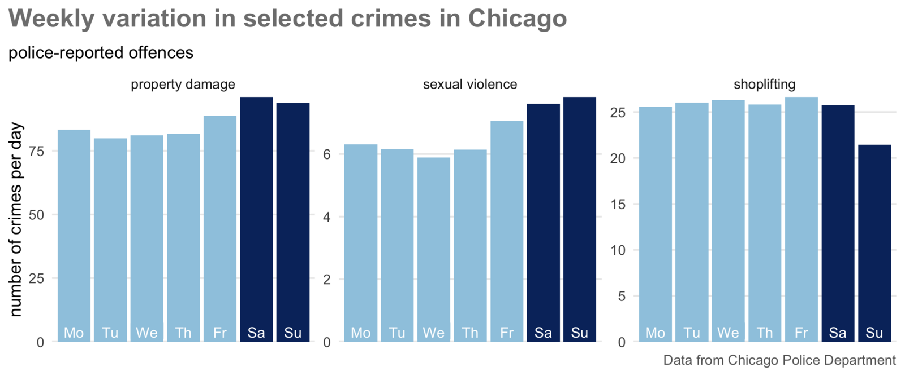
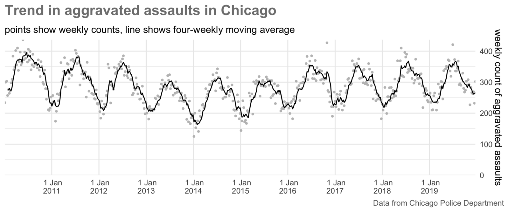
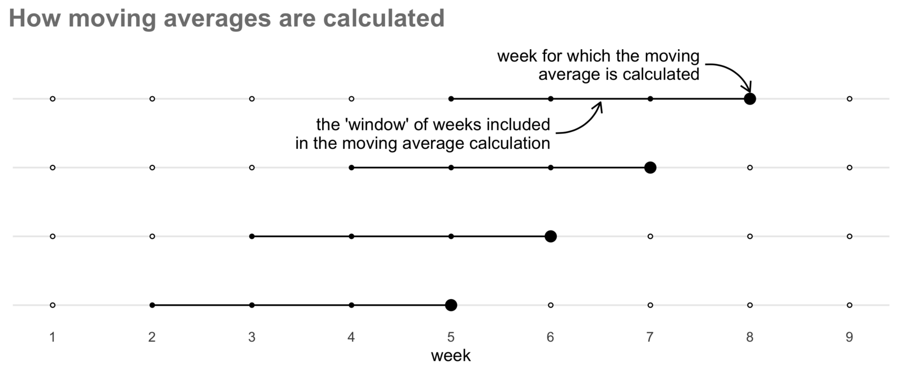
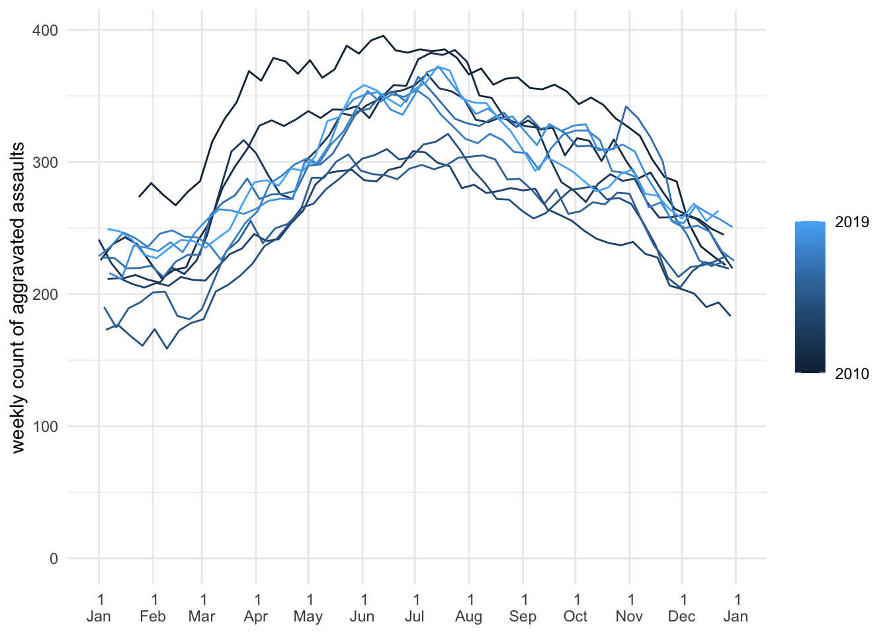
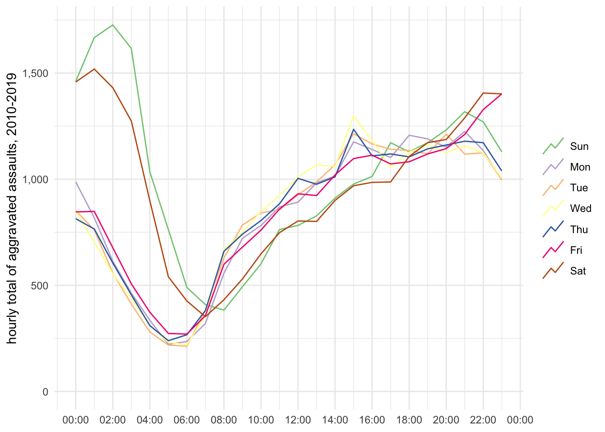
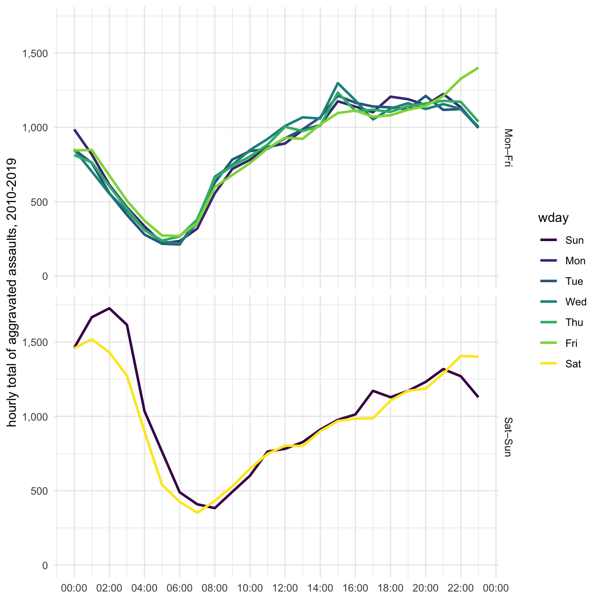
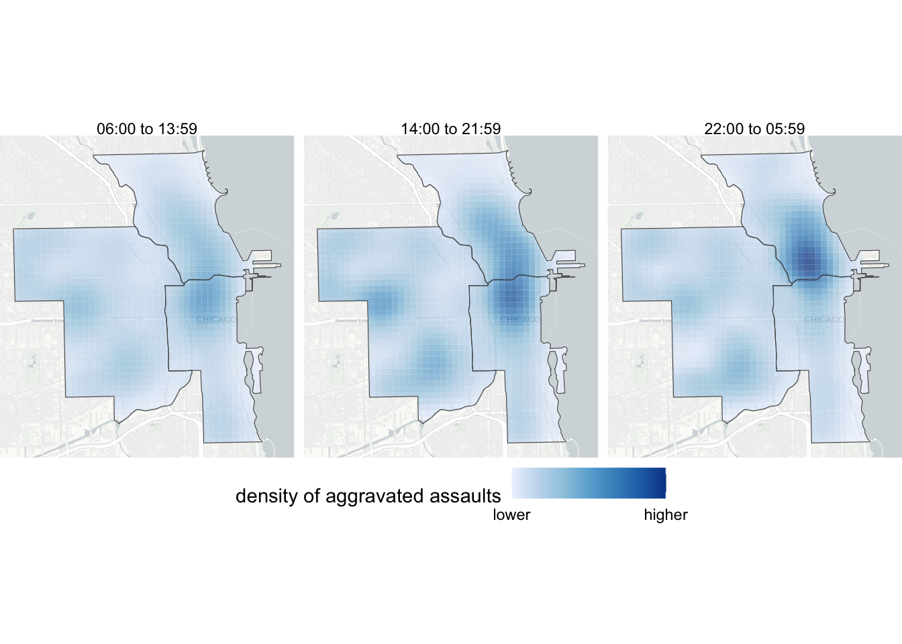
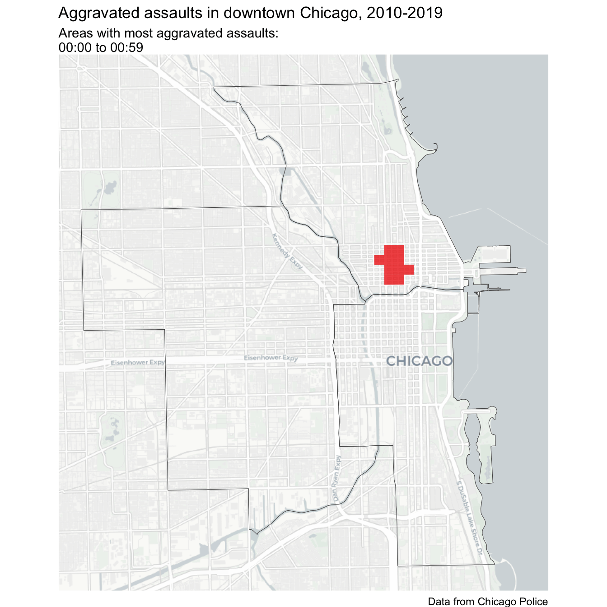

Learn to show change over time on crime maps and charts
Important
This chapter has not yet been updated for 2025, so some material is out of date. Check back for an update in mid-February 2025.
16.1 Introduction
Understanding how crime varies over time is just as important as understanding how it varies between places. Very few places are hotspots of crime all the time – business districts might be hotspots of pickpocketing in the daytime but deserted at night, while a nearby entertainment district may be quiet in the daytime but a violence hotspot at night.
There are also short-term variations in crime. Many types of crime are more common at some types of year than others (known as seasonal variation). In Chicago, for example, assaults, residential burglaries and personal robberies all vary throughout the year, with assaults in particular being consistently higher in summer than winter.
It is also important to understand short-term variation in crime. For example, both property damage and sexual violence in Chicago peaks at weekends, while there are fewer shoplifting offences on Sundays when some shops are closed or have shorter opening hours.

Understanding variation in crime over time is important because we can use the temporal concentration of crime to focus efforts to respond to crime most effectively. For example, imagine we wanted to deploy police patrols to a hotspot to respond to a particular crime problem. Such patrols could be very effective if they were targeted at the times when crimes were most likely to happen or completely useless if the officers were deployed at the wrong day or the wrong time.
In this tutorial we will learn how to incorporate variation over time into our analysis of where crime happens, including making animated maps like this one:
16.2 Handling dates in R
At a very basic level, computers can store data in two days: they can store numbers and they can store text. This makes storing dates slightly complicated, because dates aren’t completely like numbers and they aren’t completely like text either. Dates aren’t like numbers because you can’t do normal maths with dates (e.g. what date is the 29th of January plus one month?) and aren’t like text because you can do some maths with them (e.g. it is easy to calculate three days from today). Dates are especially complicated because they can be written as text in so many different ways. For example 17 January can be represented in all of these ways, all of them equally valid (although some are specific to particular countries):
17/01/2025
17.01.25
1/17/2025
2025-01-17
17 Jan 25
17 January 2025
January 17th 2025
R deals with this problem by storing dates internally as if they were numbers and displaying them (e.g. in the console or in a Quarto document) as if they were text, by default in the format 2025-01-07. Fortunately, we don’t have to worry about how dates and times are stored internally in R because we can use the lubridate package to work with them. lubridate contains functions for working with dates, including extracting parts of a date with functions such as month() and converting text to date values with functions like ymd().
Because of the special nature of dates, if we want to work with a date variable (for example to create a chart of crime over time) it is important that it is stored as a date, not as text or as a number. Many R functions for reading data, including read_csv(), read_tsv() and read_excel(), will try to recognise columns of data that contain dates and times stored in common formats. These will automatically be stored as date variables when the data is loaded.
If R does not recognise automatically that a value contains a date, we can convert it to a date by using the date-parsing functions from lubridate. Which function to use depends on the order in which the components of the date (e.g. day, month and year) appear in the variable. For example, to convert the text “Saturday 17 January 1981” to a date format we can use the dmy() function because the day of the month comes first, the month next and then the year. Similarly, converting the text “01/17/81” needs the function mdy(). Note that the lubridate date-parsing functions are able convert both numeric and text-based months, and to ignore elements that aren’t needed, such as weekday names.
If a date is stored in multiple columns in a dataset, e.g. one column for the year, one column for the month and one column for the day, we can create a single date column using the make_date() function to combine them. Similarly, we can create a date-time column using the make_datetime() function. For example, if we have a dataset of crimes called thefts:
Note that in this dataset, the date variable we have just created has the type <date>.
Once we have converted dates stored as text to dates stored as dates, R understands that they are dates and we can do things like compare them. So while running "Sat 17 January 1981" == "01/17/81" to test if two dates are the same would give the answer FALSE (because the two pieces of text are different), once we’ve converted the text to date values R can tell that the two dates are the same:
# This code returns TRUE only because the two pieces of text are identical"Sat 17 January 1981"=="Sat 17 January 1981"
[1] TRUE
# This code returns FALSE because the two pieces of text are different, even# though the dates they represent are the same"Sat 17 January 1981"=="01/17/81"
[1] FALSE
# This code returns TRUE because R knows they are dates and so compares them as# dates, finding that the two dates are the samedmy("Sat 17 January 1981") ==mdy("01/17/81")
[1] TRUE
16.2.1 Working with dates
When analysing dates and times, it is often useful to be able to extract date or time portions. We can do this with the lubridate functions year(), month(), wday() (for day of the week), mday() (for day of the month), yday() (for day of the year, counting from 1 January), hour(), minute() and second(), each of which extracts the relevant portion of a date or time as a number. The month() and wday() functions are slightly different, because they can also return the day or month name as text by specifying the argument label = TRUE. We can see this by extracting the different portions of the current date and time, which we can retrieve with the now() function from lubridate.
message("Current year: ", year(now()))
Current year: 2025
message("Current month (as a number): ", month(now()))
message("Current day of the year (days since 1 Jan): ", yday(now()))
Current day of the year (days since 1 Jan): 7
message("Current day of the month: ", mday(now()))
Current day of the month: 7
message("Current day of the week (as a number): ", wday(now()))
Current day of the week (as a number): 3
message("Current day of the week (as text): ", wday(now(), label =TRUE))
Current day of the week (as text): Tue
message("Current hour of the day: ", hour(now()))
Current hour of the day: 14
message("Current minute: ", minute(now()))
Current minute: 10
message("Current second: ", second(now()))
Current second: 40.7392361164093
It is sometimes useful to be able to add to or subtract from dates. For example, if you wanted to filter a dataset so that only records from the past 28 days were included, you would need to work out the date 28 days ago. We can do this with a group of functions from lubridate that store a period of time that we can then add to or subtract from an existing date. These functions are years(), months(), weeks(), days(), hours(), minutes(), and seconds().
In the lubridate package, functions that are used to extract parts of a date are singular, e.g. day(), month(), year(). Functions that are used to manipulate dates by adding or subtracting from them are plural, e.g. days(), months(), years(). So, for example, you would use the code month(now()) to extract the month (as a number between 1 and 12) from the current date but the code now() + months(1) to find out what the date and time will be one month from now.
To subtract 28 days from today’s date (which we can retrieve with the today() function), we would use today() - days(28).
message(str_glue("Today is {today()} and 28 days ago was {today() - days(28)}"))
Today is 2025-01-07 and 28 days ago was 2024-12-10
Adding or subtracting periods from dates can be very useful when combined with the filter() function from the dplyr() package. For example, if we had a dataset of crimes stored in an object called crimes and wanted to extract only those that occurred in the most-recent seven days, we could do this:
If we wanted to extract crimes that occurred between two dates, we can use the between() function from dplyr, which returns either TRUE or FALSE depending on whether each item in the first argument is between the values given in the second and third arguments (inclusive).
For example, complete the following code by replacing the text ____ and ____ with ymd() functions to extract only crimes occurring between 3 and 31 December 2024 inclusive.
# Add the dates to the following code in YYYY-MM-DD format (because you are # using the function `ymd()`)filter(crimes, between(occur_date, ymd(""), ymd("")))
When filtering based on dates or times, it is important to understand that R can store dates in two ways: as a date object or as a date-time object (shown as <dttm> when we print a tibble). Date variables store only a date with no time, while date-time variables always include a time component, even if the data doesn’t contain any information about time. If we store a variable that only has information about the date of an event as a date-time variable, R will silently add the time midnight to each date. This is important because if we compare a date variable to a date-time variable, R will silently convert the dates to date-times with the times set to midnight. If we are trying to filter crimes between two times, this might not be what we want. For example, if we used the code:
to extract all the crimes that occurred in January 2021, that would work as we expected only if offence_date was a date variable. If the offence_date column instead held dates and times, R would filter the data as if we had specified:
which would exclude any crimes that occurred on 31 January (except those occurring at exactly midnight). To deal with this problem, we can either check to make sure the variables we are filtering on are date variables, convert them to date variables using the as_date() function, or assume that they might be date-time variables and specify the exact time that we want as the end of our range. For example, specifying:
would allow us to select all the crimes occurring in January 2021.
16.3 Showing change over time
One common task in crime analysis is to show how crime changes over time. The simplest way to do this is to produce a time-series chart. For example, we can see how the frequency of aggravated assaults recorded by police in Chicago has changed over time:

In this section we will learn how to construct a time-series chart like this. To illustrate this process, we will use an object called assaults that contains records of aggravated assaults in Chicago from 2010 to 2019.
date
loc_cat
longitude
latitude
district
2010-01-01 00:05:00
residence
-87.6277
41.7922
2
2010-01-01 00:12:00
street
-87.6683
41.7513
6
2010-01-01 00:30:00
hotel
-87.6242
41.8727
1
2010-01-01 00:30:00
street
-87.6478
41.7536
6
2010-01-01 00:54:00
street
-87.6446
41.7720
7
2010-01-01 01:15:00
street
-87.7311
41.8984
11
The first task in charting the frequency of crime is to choose a temporal unit of analysis. For example, the chart above counts the number of crimes each week. Weeks are often a good choice as units for counting crimes, since all weeks are the same length and because many human activities have a weekly cycle (e.g. people do different things at weekends than on weekdays, even though which days count as weekdays differs across cultures).
Months are much less useful than weeks as a temporal unit of analysis because months differ in length, so monthly counts of crime will look like they show some variation even if the amount of crime occurring each day remains constant. For example, if exactly 10 crimes occur every day throughout February and March, there will be 280 or 290 crimes in February (depending on whether it is a leap year) but 310 in March. In these circumstances, it will look like the volume of crime increased by 11% between February and March, not because the rate at which crimes occurred increased but because March is 11% longer than February.
Months are also less useful because they contain different numbers of each day of the week (e.g. one month might have four Fridays while the next has five) and crimes are typically concentrated on particular days of the week (more on that later). Avoid using monthly counts of crime unless you have no choice because the only data you have available is monthly counts.
To count the number of crimes occurring each week we can use the count() function from the dplyr package. But before doing that, we have to allocate each crime to a week so that we can then count those weeks rather than counting days. To do this we use the floor_date() function from the lubridate package. This function rounds dates down to the start of a specified unit of time, in this case a week. By default, floor_date() treats Sunday as the start of the week and so if the specified unit of time is a week, all dates will be rounded down to the date of the previous Sunday.
floor_date() works on date variables, so if we want to use it on a date-time variable we should first convert it to a date variable using the as_date() function from lubridate. So to convert a date-time stored in a variable called date into the date of the first day of that week, we would use the code floor_date(as_date(date), unit = "week").
One complication of counting incidents by week is that our data might not fit neatly into calendar weeks. For example, if we have data for a particular year and that year started on a Tuesday, the first weekly count will only have data for five days and it will look like there were fewer crimes that week in comparison to other weeks. This could be misleading, since this week only looks like it has less crime because we don’t have data for the whole week. The same problem can happen with the last week of data, too. To deal with this, after counting the crimes by week we will remove the first and last row of the data using the slice() function from the dplyr package.
assault_weekly_counts <- assaults |>mutate(week_date =floor_date(as_date(date), unit ="week")) |>count(week_date, name ="count") |># The code `(n() - 1)` gives us the row number of the second-to-last row in # the data because `n()` returns the number of rows in the data. Note the# parentheses!slice(2:(n() -1))head(assault_weekly_counts)
Now we have weekly counts of aggravated assaults, we can plot them on a chart. The simplest way to do this would be to create a line chart using ggplot() with geom_line().
ggplot(assault_weekly_counts, aes(x = week_date, y = count)) +geom_line() +theme_minimal()
This plot is fine, but there are several things that we can do to make it better. Most importantly, there seems to be lots of short-term fluctuation in the frequency of crime (e.g. from one week to another). While this variation is real, we often refer to it as noise because it can obscure the signal of longer-term trends (this terminology originally came to statistics – and therefore crime analysis – from radio engineering and has become common over time).
We can reduce the visual impact of this short-term variation on our plot by adding a line showing a moving average (also called a rolling average or rolling mean) of the count of crime over time. A moving average is the average (or mean) of the count of crimes in the current week and a given number of adjacent (in this case, previous), weeks.

Since moving averages show the average count of crime over several weeks, they are less influenced by week-to-week variation. To calculate a moving average we have to choose how many weeks to include (known as the window of the moving average). The more weeks we include in the window, the smoother the values will appear from week to week and the more short-term variation will be obscured. There is a balance to be struck between making longer-term trends clear and obscuring genuine short-term variation, so you should experiment with different window lengths to ensure you are not over-smoothing.
We can calculate moving averages in R with the slide_dbl() function from the slider package (so called because its functions slide along a series of values). slide_dbl() can calculate several types of moving averages, so we specify that it should use the mean() function to calculate the average by specifying .f = mean (note the lack of parentheses after mean). We use the .before argument (note the .) to specify how many weeks before the current week to include in our moving average. So if we wanted to calculate a four-week moving average (i.e. the current week and the previous three weeks), we would specify .before = 3. We also specify .complete = TRUE to stop slide_dbl() from trying to calculate averages for the first few weeks in our data, because we don’t have the necessary data from previous weeks (i.e. before the start of our data) that we would need to make these averages accurate. slide_dbl() will use NA as the moving average value for those weeks, so we later need to specify na.rm = TRUE to tell ggplot() to ignore these when we plot the data.
Once we’ve calculated a moving average, we can show this using the line on our chart and show the individual weekly counts as small light-grey dots to show how much short-term variation there is in the data.
Experiment with the effect of setting a longer or shorter window for the moving average by specifying larger or smaller values of the .before argument to slide_dbl(). For example, create an eight-week moving average by specifying .before = 7. What happens to the apparent seasonal variation in the number of assaults if you create an annual moving average by specifying .before = 52?
You may have noticed that in this code we have also made some changes to the appearance of the plot to make it easier to read. Specifically, we have:
Added a title for the y axis and removed the x axis and legend titles using the labs() function.
Changed the labels on the x axis using scale_x_date(). In this case, we have used the argument date_breaks = "1 year" to specify that we want a label at the start of each year and the argument date_labels = "%b\n%Y" to specify that we want each label to consist of an abbreviated month name (using the code %b), a new line (the code \n as in a previous tutorial) and a four-digit year (using the code %Y). You can find a full list of codes used that can be used to specify different parts of a date and time by typing ?strptime in the R console.
Removed some of the vertical grid lines by setting the panel.grid.minor.x argument to theme() to equal element_blank().
Forced the y axis to begin at zero by specifying limits = c(0, NA), remembering that NA in this context means to use the default value.
Specified that we want the black line to be represented in the legend by a line that looks like a time series by specifying key_glyph = "timeseries".
We have also added a legend to explain what the black line shows. The code need to do this is slightly awkward, since ggplot() would not normally produce a legend for aesthetics (in this case, the colour of the line) that have only one value. To force ggplot() to add a legend, we:
Specify the colour of the line (i.e. colour = "black") not as an argument to the function geom_line() as we normally would but as one of the aesthetics specified using aes().
Specify that ggplot() should treat the value colour = "black" as a literal colour name rather than as a reference to a column in the data (which is how the arguments to aes() are normally interpreted). To do this we add scale_colour_identity() to the ggplot() stack, because identity is the jargon used in R to say ‘keep this value exactly as it is’.
Within scale_colour_identity(), specify a label to correspond to the black line by setting the labels argument.
Specify guide = guide_legend() to tell ggplot() to add a legend corresponding to the black line because aesthetics styled using functions in the scale_*_identity() family do not produce a legend entry by default.
Doing all this is obviously tedious, but makes for a better chart.
16.3.1 Showing repeating patterns over time
We have already seen that there is seasonal variation in the number of aggravated assaults in Chicago. As is very common for assaults, there are more offences in the summer and fewer in the winter. We can see this in the time-series chart we have already produced, but it’s hard to see the detail. For example, we might want to know how consistent this seasonal variation is across different years. Is it, for example, consistent enough that the local police might want to restrict the number of officers who can take holidays in certain weeks of the year to maximise the number of officers available when crime is likely to be highest?
To do this we can create a seasonal chart. This can be used to show any type of repeating variation, but is often used to show patterns across a year (hence the name). To create a seasonal plot we need to add a variable to our data specifying which year each weekly count belongs to, which we can do by using the year() function to extract the year from the offence dates. We can do this at the same time as we calculate the moving averages. Once we’ve done that, we can specify that we want our chart to have a separate line for each year by setting group = year inside the aes() function that controls how the data are shown on the chart, making each year a different colour using colour = year.
The result might not be what you expected. Although the grouping of the lines by year has worked (there is a break between the lines at the start of each year), it’s no easier to compare the seasonal patterns across years. Comparing years would be much easier if we superimpose the weekly counts for each year on top of one another.
To do this, we need to trick ggplot() into plotting all the weekly counts as if they occurred in a single year, so the counts appear in the same locations on the horizontal axis of the chart, whichever year they occurred in. We can do this by creating a pseudo-date value for each weekly count which has the same month and day of the month as the original date, but a single year across all the rows in the data. We will create this pseudo date by extracting the month and day of the month using month() and mday(), then creating a new date with make_date(). We will also change the labels on the horizontal axis using the date-formatting code %e\n%b – %e means the day of the month and %b means the abbreviated name of the month.
assault_weekly_counts |>mutate(moving_avg =slide_dbl(count, mean, .before =3, .complete =TRUE),year =year(week_date),# By only specifying the `month` and `day` arguments to `make_date()` we# will create a date in 1970 (the year that R uses by default), but that # doesn't matter because we are not going to show the year on the chartpseudo_date =make_date(month =month(week_date), day =mday(week_date)) ) |>ggplot(aes(x = pseudo_date, y = moving_avg, colour = year, group = year)) +geom_line(na.rm =TRUE, key_glyph ="timeseries") +scale_x_date(date_breaks ="1 month", date_labels ="%e\n%b") +scale_y_continuous(limits =c(0, NA)) +scale_colour_continuous(breaks =c(2010, 2019)) +labs(x =NULL,y ="weekly count of aggravated assaults",colour =NULL ) +theme_minimal() +theme(panel.grid.minor.x =element_blank() )

From this chart we can see that assaults consistently peak in July, although in one year they peaked slightly earlier in late June and in one year slightly later in August. At the other end of the year, weekly counts of assaults are almost always least frequent in late January and throughout February before starting to increase quite rapidly in March.
As well as showing seasonal variation, we can use the same technique to understand variation over other periods of time. For example, since we know a lot of human activities follow weekly patterns, we might want to produce a chart showing the number of crimes in each hour on each day of the week.
To do this, we:
Extract the weekday and hour components of each date using wday() and hour().
Count the total number of crimes occurring in each hour of each day across all ten years of the data using count().
Create a pseudo-date-time using make_datetime().
Create a chart with appropriate labels on the horizontal axis and a suitable qualitative colour scheme to show the days of the week using scale_colour_brewer().
We can do this in a single piece of code.
assault_hourly_counts <- assaults |>mutate(wday =wday(date, label =TRUE), hour =hour(date)) |>count(wday, hour, name ="count") |># By only setting the `hour` argument to `make_datetime()` we will create a# date-time on 1 January 1970, but that doesn't matter because we will not # show the date on the chartmutate(pseudo_date =make_datetime(hour = hour))ggplot( assault_hourly_counts, aes(x = pseudo_date, y = count, colour = wday, group = wday)) +geom_line(key_glyph ="timeseries") +scale_x_datetime(date_breaks ="2 hours", date_labels ="%H:%M") +scale_y_continuous(limits =c(0, NA), labels = scales::comma_format()) +scale_colour_brewer(type ="qual") +labs(x =NULL,y ="hourly total of aggravated assaults, 2010-2019",colour =NULL ) +theme_minimal()

On this chart you can see that there are two distinct temporal patterns of assaults on different days of the week. Between Mondays and Thursdays, assaults peak between about 14:00 and 21:00 before reducing to a very-low level at about 05:00. At the weekend, the picture is different: assaults peak between midnight and 02:00 on both Saturdays and Sundays (i.e. very late on Friday and Saturday evenings).
This chart probably uses the maximum number of different colours for days of the week that we could use before some of the colours became too similar to one another to be distinguishable. But even with this many colours, it might not be easy for a colour-blind person to translate between the colours of the lines and the colours in the legend. When you find that there are too many colours on a chart, this is a good sign that you should consider using small-multiple charts instead. Fortunately, we can do this by adding a column to the data specifying whether each day is a weekday or on a weekend, then adding facet_grid() to our ggplot() stack.
assault_hourly_counts |>mutate(weekend =if_else(wday %in%c("Sat", "Sun"), "Sat–Sun", "Mon–Fri")) |>ggplot(aes(x = pseudo_date, y = count, colour = wday)) +geom_line(linewidth =1) +# Assign the facets to rows so that we can compare the same time on different# days more easily (change `rows` to `cols` to see the alternative)facet_grid(rows =vars(weekend)) +scale_x_datetime(date_breaks ="2 hours", date_labels ="%H:%M") +scale_y_continuous(limits =c(0, NA), labels = scales::comma_format()) +scale_fill_brewer(type ="qual") +labs(x =NULL,y ="hourly total of aggravated assaults, 2010-2019",fill =NULL ) +theme_minimal()

This shows the two distinct patterns (weekdays and weekends) more clearly, while also letting us see that Friday is not like other weekdays since the peak in assaults continues later in the evening. Now that we’ve created this chart using facet_grid(), we could also add columns to show the same patterns in different areas, such as police districts or local neighbourhoods, or during different seasons.
16.4 How to map change over time
Time-series or seasonal charts are often the best way to show change in the frequency of crime over time. But it can also be useful to show maps of the patterns of crimes at different points in time. We might, for example, want to show the density of crime in an area for different periods in time.
Choosing how to divide up time into periods is an important step in this process, because in doing so we are converting a continuous variable (time) into a number of categories (periods of time). Whenever we convert an continuous variable to a categorical one we inevitably lose information. For example, if we decided to categorise the maximum temperature every day as being either ‘hot’ or ‘cold’, we would lose a lot of information about whether a particular day was moderately hot, very hot, etc. The same is true of time, since by splitting time into periods (hours, days, weeks, etc.) we lose information about variations within each period. This is inevitable, since we can’t produce infinite maps showing all the infinite moments in time, but it’s the reason why choosing periods carefully is important.
When choosing a period over which to count crime, it is important not to just use default periods like the day from 00:00 to 23:59 just because that is the standard definition of a day. As we saw in the previous section, the peaks of many types of crime like assaults cross over the boundaries between days because the peak frequency is late in the evening. For this reason it may be better to, for example, define a day as a period from 05:00 to 04:59 and count the number of crimes within each day according to that definition. This takes advantage of the fact that very few crimes concentrate in the early hours of the morning.
Sometimes, it will be easy to choose periods because they will be dictated by the purpose for which you’re creating the map. In this section we will create separate maps showing the density of aggravated assaults in a part of Chicago for each of the standard Chicago Police shifts of 06:00 to 13:59, 14:00 to 21:59 and 22:00 to 05:59 (bearing in mind that the actual hours some officers work may differ slightly).
To do this, we will estimate the density of assaults separately for each shift period, the combine the three density layers and plot them on small-multiple maps. First, we create a new object containing data for the Chicago Police districts we are interested in with a column showing which police shift each assault occurred in.
We can construct this column using the case_when() function from dplyr. case_when() allows us to specify any number of tests that we can apply to our data – when a test is passed the function assigns the corresponding label to that row (the label is separated from the test by a tilde character ~). case_when() is like recode(), but for when we need to test for more-complicated things than just whether a variable has a particular value.
assaults_by_shift <- assaults |>filter(district %in%c(1, 12, 18)) |>mutate(shift =case_when(between(hour(date), 6, 13) ~"06:00 to 13:59",between(hour(date), 14, 21) ~"14:00 to 21:59",hour(date) >=22|hour(date) <6~"22:00 to 05:59",TRUE~NA_character_ ) )|># Convert the data to an SF objectst_as_sf(coords =c("longitude", "latitude"), crs ="EPSG:4326") |># Transform it to a co-ordinate reference system based on metresst_transform("EPSG:26916")head(assaults_by_shift)
Simple feature collection with 6 features and 4 fields
Geometry type: POINT
Dimension: XY
Bounding box: xmin: 444951.9 ymin: 4635831 xmax: 449271.4 ymax: 4641406
Projected CRS: NAD83 / UTM zone 16N
# A tibble: 6 × 5
date loc_cat district shift geometry
<dttm> <chr> <dbl> <chr> <POINT [m]>
1 2010-01-01 00:30:00 hotel 1 22:00 to 05… (448202.2 4635831)
2 2010-01-01 01:45:00 street 18 22:00 to 05… (446518 4641406)
3 2010-01-01 01:48:00 hotel 1 22:00 to 05… (448202.2 4635831)
4 2010-01-01 02:00:00 government 18 22:00 to 05… (449271.4 4637966)
5 2010-01-01 02:59:00 leisure 12 22:00 to 05… (444951.9 4637265)
6 2010-01-01 05:00:00 residence 18 22:00 to 05… (447278.5 4639968)
Why did we include TRUE ~ NA_character_ in case_when()?
case_when() uses a series of true/false tests to create a variable, usually based on the values of other columns in the data. To make sure that every row in the dataset is matched by at least one of the tests, it is common practice to include a final test that is always true. The easiest way to do this is to simply create a test with the fixed value TRUE, since TRUE is always true! This catch-all test must be the last test within the case_when() function, because case_when() runs the tests in the order in which they are given and stops testing a given row in the data as soon as a test produces a true value.
In this case, we will set the label for this last test to be NA (in fact, the special value NA_character_ because case_when() only accepts labels that are characters) to catch any rows that have missing values of date or aren’t matched by any of our tests. Since our tests between them cover all the hours of the day, there shouldn’t be any rows that are not matched by at-least one test, but including a catch-all test makes it easier to catch any problems with our code.
The next step is to produce a kernel density (KDE) layer for assaults occurring in each shift. In a previous tutorial we learned how to do this using the sfhotspot package. We could run the hotspot_kde() function from that package three times to create the KDE layers for each shift, but there is a simpler way to apply the same function to different parts of a dataset using the group_modify() function from dplyr.
Normally, when we use a function to modify a dataset, that function is applied to the dataset as a whole. With group_modify(), we can apply a function to different parts of a dataset separately but still get the result as a single tibble with a column showing which group each row relates to (which is what we need to produce a map).
group_modify() needs two inputs. The first is a grouped dataset. We already know how to specify which column in a dataset represents which group each row is in using the group_by() function. The second input to group_modify() is the name of the function we want to use to modify each group in the data. The only complication is that we have to provide the details of the function that group_modify() should use in a slightly unusual format called an anonymous function. You can see this in the block of code below. You do not need to understand the details of how an anonymous function works, but you should note two things:
Anonymous functions start with the ~ character.
In an anonymous function used within group_modify(), you can use the special value .x (note the dot) to represent the data in each group.
Means ‘take the dataset some_data, group it according to the values in the some_variable column and apply the hotspot_kde() function separately to each group’. The only thing left for us to do then is to use ungroup() to remove the grouping from the result produced by group_modify() and convert that result back to an SF object using st_as_sf(). Don’t worry about specifying any arguments to st_as_sf() – R will extract information such as the co-ordinate reference system from the geometry column of the data automatically.
library(sfhotspot)kde_by_shift <- assaults_by_shift |>group_by(shift) |>group_modify(~hotspot_kde(.x, cell_size =200, bandwidth_adjust =0.75, quiet =TRUE) ) |>ungroup() |>st_as_sf() |># Clip the result to the boundary of Chicago, which is already stored in the # `cpd_central` objectst_intersection(cpd_central)
Warning: attribute variables are assumed to be spatially constant throughout
all geometries
head(kde_by_shift)
Simple feature collection with 6 features and 4 fields
Geometry type: POLYGON
Dimension: XY
Bounding box: xmin: 446980 ymin: 4637342 xmax: 447685.6 ymax: 4637558
Projected CRS: NAD83 / UTM zone 16N
# A tibble: 6 × 5
shift n kde district_no geometry
<chr> <dbl> <dbl> <dbl> <POLYGON [m]>
1 06:00 to 13:59 0 161. 18 ((447085.6 4637358, 447085.6 4637355, …
2 06:00 to 13:59 4 204. 18 ((447085.6 4637358, 447112.6 4637358, …
3 06:00 to 13:59 0 147. 18 ((447085.6 4637558, 447085.6 4637358, …
4 06:00 to 13:59 0 186. 18 ((447085.6 4637558, 447285.6 4637558, …
5 06:00 to 13:59 2 225. 18 ((447285.6 4637558, 447485.6 4637558, …
6 06:00 to 13:59 4 257. 18 ((447485.6 4637558, 447685.6 4637558, …
How to anonymous functions work?
Anonymous functions in R (and in many other programming languages) are a compact way of creating a new function that we can then immediately use to modify a dataset.
We can create our own functions in R by using the function() function. For example, if we wanted to create our own version of the head() function that printed the first 10 rows of a dataset – rather than the default six rows printed by head() – we could create a function called head10():
head10 <-function(x) {head(x, n =10)}
When we call the new head10() function on a dataset, R will take whatever data we provide to that function and run all the code inside the braces {} above using that data. We can use this new function anywhere in our code after we’ve created it. For example, if we had a dataset called some_data we could view the first 10 rows of it by creating an then using our new function:
head10 <-function(x) {head(x, n =10)}head10(some_data)
Note that inside our new function, the dataset is referred to by the name that we gave it in the parentheses () after the word function, not by the name of the dataset itself. This is important because it means our custom function will work regardless of what a particular dataset is called.
We could include lots of lines of code inside our new function, but in this case there is just one – head(x, n = 10). When we want to create a function that consists of a single line of code, we can dispense with the braces and put the whole function on one line:
head10 <-function(x) head(x, n =10)head10(some_data)
Creating a new function and giving it a name is useful if we want to use the function several times in our code. But in the case of the function we need to provide to group_modify() in our code, we only need to use the new function once. In this case, we can dispense with the need to give our new function a name, and instead create an anonymous function. To do this, we replace function(x) with the ~ character.
This makes the definition of our custom function even faster, but means we can only use it inside a function such as group_modify() or map() that needs a function definition to work. Using an anonymous function also means we need some way of referring to our dataset inside the new function, since we don’t have the opportunity to define it inside parentheses after the word function. Fortunately, group_modify() understands that if we refer to .x (note the dot) inside our anonymous function, that should be interpreted as referring to our dataset.
Warning: The `legend.title.align` argument of `theme()` is deprecated as of ggplot2
3.5.0.
ℹ Please use theme(legend.title = element_text(hjust)) instead.

On this map we can see that some places have a relatively high density of assaults throughout all three shifts, but others only have a high density at certain times. We can perhaps make this clearer by only showing the grid cells with the highest estimated density of assaults during each shift. We can do this using the slice_max() function from dplyr, which allows us to extract the rows in a dataset with the highest values of a particular variable. In this case we will use slice_max() together with group_by() to get the rows with the highest values separately for each shift rather than those with the highest values across all three shifts combined.
This map makes it very clear that the grid cells with the highest densities of aggravated assaults are very similar in the daytime and evening shifts, in both places being concentrated in the downtown area known as The Loop. For the overnight shift, however, the cells with the highest densities are on the other side of the Chicago River in the River North neighbourhood. A map like this might be particularly useful if the resources available to respond to a crime problem were very limited and so could only be deployed in the places where the problem was worst – this is often the case because crime-prevention resources are often very limited.
16.5 Making animated maps
The small-multiple map we have produced of aggravated-assault hotspots in Chicago is useful, especially for policing because it uses periods based on police shifts. But aggregating crimes into only three temporal periods inevitably throws away a lot of information about when crime happens. For example, at what time of night does the area of highest assault density move across the river from The Loop to River North?
We could produce a series of small-multiple maps showing shorter periods (meaning more small multiples). For example, we could show one small-multiple map for each hour of the day. However, this would make each map very small and it would be hard to see the details of locations on each map.
One alternative is to produce an animated map with each frame in the animation representing the map for each hour. We can do this using the gganimate package.
The first step in producing an animated map is to create a KDE layer for each hour of the day. The code for this is the same as for the code we have already used to produce the KDE layers for each shift, except that we create a variable for hour of the day rather than police shift. Because an animated map of hours of the day needs 24 KDE layers, in this case it is particularly useful to use group_modify() to avoid having to create 24 different objects and then binding them together.
library(gganimate)assaults_by_hour <- assaults |>filter(district %in%c(1, 12, 18)) |>mutate(# Create nicely formatted labels for each hourhour_name =str_pad(hour(date), width =2, pad ="0"),hour_name =str_glue("{hour_name}:00 to {hour_name}:59") ) |>st_as_sf(coords =c("longitude", "latitude"), crs ="EPSG:4326") |># Convert the data to a suitable co-ordinate system for Chicagost_transform("EPSG:26916")hour_layers <- assaults_by_hour |>group_by(hour_name) |>group_modify(~hotspot_kde(.x, cell_size =200, bandwidth_adjust =0.75, quiet =TRUE) ) |>ungroup() |>st_as_sf() |>st_intersection(cpd_central)
Warning: attribute variables are assumed to be spatially constant throughout
all geometries
# Extract only the 10 cells with the highest density in each hourhour_highest <- hour_layers |>group_by(hour_name) |>slice_max(order_by = kde, n =10)
It is possible that this code will time out and give an error saying Your code ran longer than the permitted timelimit for this exercise. – if that happens then just continue with the rest of the tutorial as normal.
This code is likely to take a while to run, because it calculates KDE values separately for every grid cell for each of 24 hours.
We can now use the hour_highest object as the basis for a new base map that only includes the areas of the highest density (so they appear larger on the animated map).
To create an animated map we use the transition_states() function from the gganimate package. transition_states() works in a similar way to facet_wrap(), in that when added to a ggplot() stack it splits the chart or map up into a separate map for each value of one of the variables in the data (in this case, the hour of the day). The only difference is that while facet_wrap() arranges those separate maps next to one another, transition_states() arranges them into an animation.
ggplot() +annotation_map_tile(type ="cartolight", zoomin =0, progress ="none") +geom_sf(aes(fill = kde),data = hour_highest, alpha =0.75, colour =NA,fill ="red2" ) +geom_sf(data = cpd_central, colour ="grey33", fill =NA) +transition_states(states = hour_name) +labs(title ="Aggravated assaults in downtown Chicago, 2010-2019",subtitle ="Areas with most aggravated assaults:\n{closest_state}",caption ="Data from Chicago Police" ) +theme_void()

I got an error starting Your code ran longer than
This code may take longer to run than is allowed for code inside an interactive tutorial. In which case, you may see the error Your code ran longer than the permitted timelimit for this exercise. If that happens, you can download the Chicago assaults data and create an animated map in an R script of your own using the code in the chunks above. For reference, this code should produce a map looking like this:
There is one other function of gganimate we have used in the code used to make this map. You might have noticed that in the map subtitle is the code {closest_state}. This is a special code that gganimate will replace with the current value of the variable in the data that is used to control which facet appears in each frame of the animation. So for this map, {closest_state} will be replaced in the animation with the value of the hour_name variable in the data for each frame in the animation.
This animated map is very sensitive to the number of grid cells we choose to extract (in the map above, 10 cells for each hour) – it might look quite different if we had chosen a different number. To show the density of crime in all of downtown Chicago, we can combine the base map and KDE layers we have already created to produce another animated map.
ggplot() +annotation_map_tile(type ="cartolight", zoomin =0, progress ="none") +geom_sf(aes(fill = kde), data = hour_layers, alpha =0.75, colour =NA) +geom_sf(data = cpd_central, colour ="grey33", fill =NA) +transition_states(states = hour_name) +scale_fill_distiller(breaks =range(pull(hour_layers, kde)),labels =c("lower", "higher"),direction =1 ) +labs(title ="Aggravated assaults in downtown Chicago, 2010-2019",subtitle ="Density of aggravated assaults: {closest_state}",caption ="Data from Chicago Police",fill ="density of\naggravated\nassaults" ) +theme_void()
This code typically takes a minute or so to finish running because it has to generate 24 maps and then stitch them together. It is unlikely that the code will finish running before the maximum time that a chunk of code in an R tutorial is allowed to run for before automatically stopping. If you were to run this code in RStudio, the map it would produce would look like this:
We can save an animated map to a file using the animate() and anim_save() functions. animate() controls the type of file the animation will be saved in (by default, an animated GIF), the height and width of the plot and so on. anim_save() then saves the animation in a file. For example, if we stored the map created above in an object called chicago_downtown_kde_map, we could save it to an animated GIF file.
In this tutorial we have learned how to incorporate change over time into our analysis of where crime happens. This is important because the distribution of crime across different places often varies at different times. Being aware of the importance of time when we make maps means we can do things like create small-multiple or animated maps for different time periods, which we could use to make sure that scarce crime-prevention resources are used at the right time as well as in the right place.
This is the complete code we need to create an animated map of aggravated assaults in Chicago. Think about how you could change it, or what extra information you could add, to make this map as useful as possible to different groups of practitioners and policy makers.
# Load packageslibrary(gganimate)library(ggspatial)library(lubridate)library(sf)library(sfhotspot)library(tidyverse)# Load data --------------------------------------------------------------------# Aggravated assaults, Chicago, 2010 to 2019assaults <-read_csv("https://mpjashby.github.io/crimemappingdata/chicago_aggravated_assaults.csv.gz")
Rows: 148636 Columns: 5
── Column specification ────────────────────────────────────────────────────────
Delimiter: ","
chr (1): loc_cat
dbl (3): longitude, latitude, district
dttm (1): date
ℹ Use `spec()` to retrieve the full column specification for this data.
ℹ Specify the column types or set `show_col_types = FALSE` to quiet this message.
# Chicago Police districts 1, 12 and 18cpd_central <-read_sf("https://mpjashby.github.io/crimemappingdata/chicago_police_districts.kml") |>st_transform("EPSG:26916") |>mutate(district_no =as.numeric(Name)) |>filter(district_no %in%c(1, 12, 18))# Wrangle data -----------------------------------------------------------------# Calculate number of assaults each hourhour_layers <- assaults |>filter(district %in%c(1, 12, 18)) |>mutate(hour_name =str_pad(hour(date), width =2, pad ="0"),hour_name =str_glue("{hour_name}:00 to {hour_name}:59") ) |>st_as_sf(coords =c("longitude", "latitude"), crs ="EPSG:4326") |>st_transform("EPSG:26916") |>group_by(hour_name) |>group_modify(~hotspot_kde(.x, cell_size =200, bandwidth_adjust =0.75, quiet =TRUE) ) |>ungroup() |>st_as_sf() |>st_intersection(cpd_central)
Warning: attribute variables are assumed to be spatially constant throughout
all geometries
# Create map ---------------------------------------------------------------------chicago_downtown_kde_map <-ggplot() +annotation_map_tile(type ="cartolight", zoomin =0, progress ="none") +geom_sf(aes(fill = kde), data = hour_layers, alpha =0.75, colour =NA) +geom_sf(data = cpd_central, colour ="grey33", fill =NA) +transition_states(states = hour_name) +scale_fill_distiller(breaks =range(pull(hour_layers, kde)),labels =c("lower", "higher"),direction =1 ) +labs(title ="Aggravated assaults in downtown Chicago, 2010-2019",subtitle ="Density of aggravated assaults: {closest_state}",caption ="Data from Chicago Police",fill ="density of\naggravated\nassaults" ) +theme_void()# Save map ---------------------------------------------------------------------anim_save(filename ="chicago_downtown_agg_assaults.gif", animation =animate(plot = chicago_downtown_kde_map,height =800, width =800, units ="px" ))
---execute: freeze: auto---# Mapping crime over time {#sec-mapping-time}**Learn to show change over time on crime maps and charts**::: {.callout-important}This chapter has not yet been updated for 2025, so some material is out of date. Check back for an update in mid-February 2025.:::```{r setup, include=FALSE, message=FALSE, warning=FALSE}#| echo: false#| include: falsesource(here::here("mask_learnr_functions.R"))# Load packages# Note that `gifski` and `transformr` aren't used in the tutorial, but are# required for `gganimate` to be able to create animated maps, so they are# loaded here to force `learnr` to prompt the user to install them the first# time they load this tutoriallibrary(gganimate)library(ggspatial)library(gifski)library(lubridate)library(sf)library(sfhotspot)library(slider)library(tidyverse)library(transformr)# Load data --------------------------------------------------------------------# Crime data for demonstrating date manipulationcrimes <- read_csv( "https://mpjashby.github.io/crimemappingdata/bronx_shootings.csv", show_col_types = FALSE) |> # Change dates so they can be filtered using recent dates mutate(occur_date = as_date(runif( n(), min = as.numeric(today() - days(28 + 7)), max = as.numeric(today()) )))# Crime data for demonstrating date creationthefts <- read_csv( "https://mpjashby.github.io/crimemappingdata/vancouver_thefts.csv.gz", show_col_types = FALSE) |> janitor::clean_names() |> select(year, month_of_year = month, day_of_month = day, hour, minute, x, y) |> filter(month_of_year == 9)## Assaults data for animated map ----# Load data assaults <- read_csv( "https://mpjashby.github.io/crimemappingdata/chicago_aggravated_assaults.csv.gz", show_col_types = FALSE)cpd_districts <- read_sf("https://mpjashby.github.io/crimemappingdata/chicago_police_districts.kml") |> st_transform("EPSG:26916") |> select(district_no = Name, geometry) |> mutate(district_no = as.numeric(district_no))cpd_central <- filter(cpd_districts, district_no %in% c(1, 12, 18))# Weekly countsassault_weekly_counts <- assaults |> mutate(week_date = floor_date(as_date(date), unit = "week")) |> count(week_date, name = "count") |> slice(2:(n() - 1))# Hourly countsassault_hourly_counts <- assaults |> mutate(wday = wday(date, label = TRUE), hour = hour(date)) |> count(wday, hour, name = "count") |> mutate(pseudo_date = make_datetime(year = 2010, hour = hour))# Counts by shift assaults_by_shift <- assaults |> filter(district %in% c(1, 12, 18)) |> mutate( shift = case_when( between(hour(date), 6, 13) ~ "06:00 to 13:59", between(hour(date), 14, 21) ~ "14:00 to 21:59", hour(date) >= 22 | hour(date) < 6 ~ "22:00 to 05:59", TRUE ~ NA_character_ ) ) |> st_as_sf(coords = c("longitude", "latitude"), crs = "EPSG:4326") |> st_transform("EPSG:26916")# Assaults by shift nestednested_assaults <- assaults_by_shift |> # Remove all the columns except the ones we want select(shift, geometry) |> # Nest the `geometry` column nest(data = geometry)## KDE layers ----# KDE layers for assaults by shift small multipleskde_by_shift <- assaults_by_shift |> group_by(shift) |> group_modify(~ hotspot_kde(.x, cell_size = 200, bandwidth_adjust = 0.75)) |> ungroup() |> st_as_sf() |> st_intersection(cpd_central)# KDE layers for assaults by hour animationif (file.exists("www/chicago_hourly_kde.rds")) { hour_layers <- read_rds("www/chicago_hourly_kde.rds")} else { assaults_by_hour <- assaults |> filter(district %in% c(1, 12, 18)) |> mutate( # Create nicely formatted labels for each hour hour_name = str_pad(hour(date), width = 2, pad = "0"), hour_name = str_glue("{hour_name}:00 to {hour_name}:59") ) |> st_as_sf(coords = c("longitude", "latitude"), crs = "EPSG:4326") |> # Convert the data to a suitable co-ordinate system for Chicago st_transform("EPSG:26916") hour_layers <- assaults_by_hour |> group_by(hour_name) |> group_modify(~ hotspot_kde(.x, cell_size = 200, bandwidth_adjust = 0.75)) |> ungroup() |> st_as_sf() |> # Clip the result to the boundary of Chicago, which is already stored in the # `cpd_districts` object st_intersection(cpd_central) # If run manually, this path will need to be prefixed with # "inst/tutorials/16_mapping_time/" write_rds(hour_layers, "www/chicago_hourly_kde.rds")}# KDE cells with highest density by hourhour_highest <- hour_layers |> group_by(hour_name) |> slice_max(order_by = kde, n = 10)```## IntroductionUnderstanding how crime varies over time is just as important as understanding how it varies between places. Very few places are hotspots of crime all the time – business districts might be hotspots of pickpocketing in the daytime but deserted at night, while a nearby entertainment district may be quiet in the daytime but a violence hotspot at night.Crime varies over time in lots of ways. For example, there was a long-term dropin many types of crime in many countries starting in the mid 1990s, e.g.[residential burglary in England and Wales dropped by 67% between 1993 and 2008](https://crimesciencejournal.biomedcentral.com/articles/10.1186/s40163-016-0051-z)while the number of [homicides in New York City dropped almost 90% from 2,245 in 1990 to 289 in 2018](https://www.brennancenter.org/our-work/analysis-opinion/takeaways-2019-crime-data-major-american-cities).There are also short-term variations in crime. Many types of crime are morecommon at some types of year than others (known as *seasonal variation*). InChicago, for example, assaults, residential burglaries and personal robberies all vary throughout the year, with assaults in particular being consistently higher in summer than winter.```{r chicago-seasona-variation-charts, eval=FALSE, echo=FALSE}crimes <- crimedata::get_crime_data( years = 2010:2019, cities = "Chicago", type = "core")# Seasonal chart ---------------------------------------------------------------counts <- crimes %>% mutate( offence = case_when( offense_group == "assault offenses" ~ "assaults", offense_code == "22A" ~ "residential burglaries", offense_code == "12A" ~ "personal robberies", TRUE ~ NA_character_ ), yday = yday(date_single), year = year(date_single) ) %>% filter(!is.na(offence)) %>% count(offence, year, yday, name = "count") %>% mutate(date = as_date(str_glue("2012 {yday}"), format = "%Y %j"))counts_chart <- ggplot(counts, aes(date, count, colour = year, group = year)) + geom_smooth( method = "loess", formula = "y ~ x", se = FALSE, size = 0.5 ) + facet_wrap(vars(offence), ncol = 3, scales = "free_y") + scale_x_date( date_breaks = "2 months", date_labels = "%b", sec.axis = dup_axis() ) + scale_y_continuous(limits = c(0, NA)) + scale_colour_gradient( breaks = range(counts$year, na.rm = TRUE), labels = range(counts$year, na.rm = TRUE), low = RColorBrewer::brewer.pal(9, "Blues")[4], high = RColorBrewer::brewer.pal(9, "Blues")[9], guide = guide_colourbar(reverse = TRUE, ticks = FALSE) ) + labs( title = "Seasonal variation in selected crimes in Chicago", subtitle = "police-reported offences", x = NULL, y = "number of crimes per day", caption = "Data from Chicago Police Department" ) + theme_minimal() + theme( axis.ticks.y = element_line(colour = "grey80"), panel.grid.major.y = element_blank(), panel.grid.minor = element_blank(), plot.caption = element_text(colour = "grey40"), plot.caption.position = "plot", plot.title = element_text( colour = "grey50", face = "bold", size = 16, margin = margin(b = 9) ), plot.title.position = "plot", strip.placement = "outside" )ggsave( filename = here::here("inst/tutorials/16_mapping_time/images/chicago_seasonal_variation.png"), plot = counts_chart, width = 1200 / 150, height = 500 / 150, dpi = 300)# Weekly chart -----------------------------------------------------------------weekly_chart <- crimes %>% mutate( offence = case_when( offense_code == "290" ~ "property damage", offense_group == "sex offenses" ~ "sexual violence", offense_code == "23C" ~ "shoplifting", TRUE ~ NA_character_ ), weekday = wday(date_single, label = TRUE, week_start = 1) ) %>% filter(!is.na(offence), !is.na(weekday)) %>% count(offence, weekday, name = "count") %>% mutate( count = count / (52 * 10), weekend = weekday %in% c("Sat", "Sun") ) %>% ggplot(aes(weekday, count, fill = weekend, label = str_sub(weekday, 1, 2))) + geom_col() + geom_label( aes(y = 0), colour = "white", # label.padding = unit(0.1, "lines"), label.size = NA, size = 3.25, vjust = 0 ) + facet_wrap(vars(offence), ncol = 3, scales = "free_y") + scale_y_continuous( labels = scales::comma_format(accuracy = 1), expand = c(0, 0) ) + scale_fill_manual(values = c(RColorBrewer::brewer.pal(9, "Blues")[c(4, 9)])) + labs( title = "Weekly variation in selected crimes in Chicago", subtitle = "police-reported offences", x = NULL, y = "number of crimes per day", caption = "Data from Chicago Police Department" ) + theme_minimal() + theme( axis.text.x = element_blank(), axis.title.x = element_blank(), legend.position = "none", panel.grid.major.x = element_blank(), panel.grid.minor = element_blank(), plot.caption = element_text(colour = "grey40"), plot.caption.position = "plot", plot.title = element_text( colour = "grey50", face = "bold", size = 16, margin = margin(b = 9) ), plot.title.position = "plot" )ggsave( filename = here::here("inst/tutorials/16_mapping_time/images/chicago_weekly_variation.png"), plot = weekly_chart, width = 1200 / 150, height = 500 / 150, dpi = 300)# Trend chart ------------------------------------------------------------------trend_chart <- crimes %>% filter(offense_code == "13A", !is.na(date_single)) %>% mutate(yearweek = floor_date(as_date(date_single), unit = "week")) %>% count(yearweek) %>% slice(2:(n() - 1)) %>% mutate(rolling_mean = slide_dbl(n, mean, .before = 4, .complete = TRUE)) %>% ggplot(aes(x = yearweek, y = n)) + geom_point(colour = "grey75", size = 0.75) + geom_line(aes(y = rolling_mean), na.rm = TRUE) + scale_x_date(date_breaks = "1 year", date_labels = "%e %b\n%Y", expand = c(0, 0)) + scale_y_continuous(limits = c(0, NA), expand = c(0, 0), position = "right") + labs( title = "Trend in aggravated assaults in Chicago", subtitle = "points show weekly counts, line shows four-weekly moving average", caption = "Data from Chicago Police Department", x = NULL, y = "weekly count of aggravated assaults" ) + theme_minimal() + theme( panel.grid.minor.x = element_blank(), plot.caption = element_text(colour = "grey40"), plot.caption.position = "plot", plot.title = element_text( colour = "grey50", face = "bold", size = 16, margin = margin(b = 9) ), )ggsave( filename = here::here("inst/tutorials/16_mapping_time/images/chicago_assault_trend.png"), plot = trend_chart, width = 1200 / 150, height = 500 / 150, dpi = 300)```<p class="full-width-image"><img src="images/chicago_seasonal_variation.png" alt="Chart showing that assaults, personal robberies and residential burglaries in Chicago all vary by seasonally throughout the year."></p>It is also important to understand short-term variation in crime. For example,both property damage and sexual violence in Chicago peaks at weekends, while there are fewer shoplifting offences on Sundays when some shops are closed orhave shorter opening hours.<p class="full-width-image"><img src="images/chicago_weekly_variation.png" alt="Chart showing that property damage, sexual violence and shoplifting in Chicago all vary by day of the week."></p>Understanding variation in crime over time is important because we can use thetemporal concentration of crime to focus efforts to respond to crime mosteffectively. For example, imagine we wanted to deploy police patrols to a hotspot to respond to a particular crime problem. Such patrols could be very effective if they were targeted at the times when crimes were most likely to happen or completely useless if the officers were deployed at the wrong day or the wrong time.In this tutorial we will learn how to incorporate variation over time into ouranalysis of where crime happens, including making animated maps like this one:<p class="centered-image"><img src="https://github.com/mpjashby/crimemapping/raw/main/inst/tutorials/16_mapping_time/images/chicago_downtown_agg_assaults.gif" alt="Animated map showing how the density of aggravated assaults in Chicago varies throughout the hours of the day."></p>## Handling dates in R<p class="full-width-image"><img src="images/lubridate_cartoon.jpg" alt="Cartoon showing little monsters feeding lubridate functions into a Back-to-the-Future-style car with the licence plate LUBRDAT."></p>At a very basic level, computers can store data in two days: they can store numbers and they can store text. This makes storing dates slightly complicated, because dates aren't completely like numbers and they aren't completely like text either. Dates aren't like numbers because you can't do normal maths with dates (e.g. what date is the 29th of January plus one month?) and aren't like text because you can do some maths with them (e.g. it is easy to calculate three days from today). Dates are especially complicated because they can be written as text in so many different ways. For example 17 January can be represented in all of these ways, all of them equally valid (although some are specific to particular countries): * 17/01/`r format(Sys.Date(), "%Y")` * 17.01.`r format(Sys.Date(), "%y")` * 1/17/`r format(Sys.Date(), "%Y")` * `r format(Sys.Date(), "%Y")`-01-17 * 17 Jan `r format(Sys.Date(), "%y")` * 17 January `r format(Sys.Date(), "%Y")` * January 17th `r format(Sys.Date(), "%Y")`<a href="https://lubridate.tidyverse.org/" title="lubridate website"><img src="images/lubridate.png" class="right-side-image"></a>R deals with this problem by _storing_ dates internally as if they were numbers and _displaying_ them (e.g. in the console or in a Quarto document) as if they were text, by default in the format ``r Sys.Date()``. Fortunately, we don't have to worry about how dates and times are stored internally in R because we can use the [`lubridate` package](https://lubridate.tidyverse.org/) to work with them. `lubridate` contains functions for working with dates, including extracting parts of a date with functions such as `month()` and converting text to date values with functions like `ymd()`.Because of the special nature of dates, if we want to work with a date variable(for example to create a chart of crime over time) it is important that it isstored as a date, not as text or as a number. Many R functions for reading data, including `read_csv()`, `read_tsv()` and `read_excel()`, will try to recognise columns of data that contain dates and times stored in common formats. These will automatically be stored as date variables when the data is loaded. If R does not recognise automatically that a value contains a date, we canconvert it to a date by using the date-parsing functions from `lubridate`. Which function to use depends on the order in which the components of the date (e.g. day, month and year) appear in the variable. For example, to convert the text "Saturday 17 January 1981" to a date format we can use the `dmy()` function because the **d**ay of the month comes first, the **m**onth next and then the **y**ear. Similarly, converting the text "01/17/81" needs the function `mdy()`. Note that the `lubridate` date-parsing functions are able convert both numeric and text-based months, and to ignore elements that aren't needed, such as weekday names.If a date is stored in multiple columns in a dataset, e.g. one column for the year, one column for the month and one column for the day, we can create a single date column using the `make_date()` function to combine them. Similarly, we can create a date-time column using the `make_datetime()` function. For example, if we have a dataset of crimes called `thefts`:```{r dates-exercise1, exercise=TRUE}library(lubridate)thefts |> mutate( date = make_date(year = year, month = month_of_year, day = day_of_month) ) |> select(day_of_month, month_of_year, year, date)```Note that in this dataset, the `date` variable we have just created has the type`<date>`.Once we have converted dates stored as text to dates stored as dates, R understands that they are dates and we can do things like compare them. So whilerunning `"Sat 17 January 1981" == "01/17/81"` to test if two dates are the samewould give the answer `FALSE` (because the two pieces of text are different),once we've converted the text to date values R can tell that the two dates arethe same:```{r dates-exercise2, exercise=TRUE}# This code returns TRUE only because the two pieces of text are identical"Sat 17 January 1981" == "Sat 17 January 1981"# This code returns FALSE because the two pieces of text are different, even# though the dates they represent are the same"Sat 17 January 1981" == "01/17/81"# This code returns TRUE because R knows they are dates and so compares them as# dates, finding that the two dates are the samedmy("Sat 17 January 1981") == mdy("01/17/81")```### Working with datesWhen analysing dates and times, it is often useful to be able to extract date or time portions. We can do this with the `lubridate` functions `year()`, `month()`, `wday()` (for day of the week), `mday()` (for day of the month), `yday()` (for day of the year, counting from 1 January), `hour()`, `minute()`and `second()`, each of which extracts the relevant portion of a date or time as a number. The `month()` and `wday()` functions are slightly different, because they can also return the day or month name as text by specifying the argument `label = TRUE`. We can see this by extracting the different portions of the current date and time, which we can retrieve with the `now()` function from `lubridate`.```{r dates-exercise3, exercise=TRUE}message("Current year: ", year(now()))message("Current month (as a number): ", month(now()))message("Current month (as text, abbreviated): ", month(now(), label = TRUE))message("Current month (as text): ", month(now(), label = TRUE, abbr = FALSE))message("Current day of the year (days since 1 Jan): ", yday(now()))message("Current day of the month: ", mday(now()))message("Current day of the week (as a number): ", wday(now()))message("Current day of the week (as text): ", wday(now(), label = TRUE))message("Current hour of the day: ", hour(now()))message("Current minute: ", minute(now()))message("Current second: ", second(now()))```It is sometimes useful to be able to add to or subtract from dates. For example,if you wanted to filter a dataset so that only records from the past 28 dayswere included, you would need to work out the date 28 days ago. We can do thiswith a group of functions from `lubridate` that store a period of time that wecan then add to or subtract from an existing date. These functions are `years()`, `months()`, `weeks()`, `days()`, `hours()`, `minutes()`, and `seconds()`. ::: {.box .notewell}In the `lubridate` package, functions that are used to _extract_ parts of a dateare _singular_, e.g. `day()`, `month()`, `year()`. Functions that are used to_manipulate_ dates by adding or subtracting from them are _plural_, e.g. `days()`, `months()`, `years()`. So, for example, you would use the code`month(now())` to extract the month (as a number between 1 and 12) from the current date but the code `now() + months(1)` to find out what the date and timewill be one month from now.:::To subtract 28 days from today's date (which we can retrieve with the `today()`function), we would use `today() - days(28)`.```{r dates-exercise4, exercise=TRUE}message(str_glue("Today is {today()} and 28 days ago was {today() - days(28)}"))```Adding or subtracting periods from dates can be very useful when combined withthe `filter()` function from the `dplyr()` package. For example, if we had adataset of crimes stored in an object called `crimes` and wanted to extract only those that occurred in the most-recent seven days, we could do this:```{r dates-exercise5, exercise=TRUE}filter(crimes, occur_date >= today() - days(7))``````{r period-setup, include=FALSE, echo=FALSE}start_date <- today() - days(28 + 7)end_date <- today() - days(7)start_date_formatted <- case_when( year(start_date) == year(end_date) && month(start_date) == month(end_date) ~ str_squish(format(start_date, "%e")), year(start_date) == year(end_date) ~ str_squish(format(start_date, "%e %B")), TRUE ~ str_squish(format(start_date, "%e %B %Y")))end_date_formatted <- str_squish(format(end_date, "%e %B %Y"))```If we wanted to extract crimes that occurred between two dates, we can use the`between()` function from `dplyr`, which returns either `TRUE` or `FALSE`depending on whether each item in the first argument is between the values givenin the second and third arguments (inclusive).::: {.tutorial}For example, complete the following code by replacing the text `____` and `____` with `ymd()` functions to extract only crimes occurring between `r start_date_formatted` and `r end_date_formatted` inclusive.```{r dates-exercise6, exercise=TRUE, error=TRUE}filter(crimes, between(occur_date, ____, ____))``````{r dates-exercise6-hint}# Add the dates to the following code in YYYY-MM-DD format (because you are # using the function `ymd()`)filter(crimes, between(occur_date, ymd(""), ymd("")))```:::When filtering based on dates or times, it is important to understand that R canstore dates in two ways: as a *date* object or as a *date-time* object (shown as `<dttm>` when we print a tibble). Date variables store only a date with no time, while date-time variables always include a time component, even if the data doesn't contain any information about time. If we store a variable that only has information about the date of an event as a date-time variable, R will silently add the time midnight to each date. This is important because if we compare a date variable to a date-time variable, R will silently convert the dates to date-times with the times set to midnight. If we are trying to filter crimes between two times, this might not be what we want. For example, if we used the code:```rbetween(offence_date, ymd("2021-01-01"), ymd("2021-01-31"))```to extract all the crimes that occurred in January 2021, that would work as we expected only if `offence_date` was a date variable. If the `offence_date`column instead held dates *and* times, R would filter the data *as if* we had specified:```rbetween(offence_date, ymd_hm("2021-01-01 00:00"), ymd_hm("2021-01-31 00:00"))```which would exclude any crimes that occurred on 31 January (except thoseoccurring at exactly midnight). To deal with this problem, we can either checkto make sure the variables we are filtering on are date variables, convert themto date variables using the `as_date()` function, or assume that they might be date-time variables and specify the exact time that we want as the end of our range. For example, specifying:```rbetween(offence_date, ymd_hm("2021-01-01 00:00"), ymd_hm("2021-01-31 23:59"))```or```rbetween(as_date(offence_date), ymd("2021-01-01"), ymd("2021-01-31"))```would allow us to select all the crimes occurring in January 2021.## Showing change over timeOne common task in crime analysis is to show how crime changes over time. Thesimplest way to do this is to produce a *time-series chart*. For example, we cansee how the frequency of aggravated assaults recorded by police in Chicago has changed over time:<p class="full-width-image"><img src="images/chicago_assault_trend.png" alt="Chart showing that the weekly frequency of aggravated assaults in Chicago from 2010 to 2019, including seasonal increases each summer and lower frequency of assaults from 2013 to 2015."></p>In this section we will learn how to construct a time-series chart like this. To illustrate this process, we will use an object called `assaults` that contains records of aggravated assaults in Chicago from 2010 to 2019.```{r, echo=FALSE}assaults |> head() |> gt::gt()```The first task in charting the frequency of crime is to choose a temporal *unit of analysis*. For example, the chart above counts the number of crimes each*week*. Weeks are often a good choice as units for counting crimes, since allweeks are the same length and because many human activities have a weekly cycle(e.g. people do different things at weekends than on weekdays, even thoughwhich days count as weekdays differs across cultures). ::: {.box .notewell}Months are much less useful than weeks as a temporal unit of analysis because months differ in length, so monthly counts of crime will look like they showsome variation even if the amount of crime occurring each day remains constant.For example, if exactly 10 crimes occur every day throughout February and March,there will be `r scales::comma(10 * 28, accuracy = 1)` or `r scales::comma(10 * 29, accuracy = 1)` crimes in February (depending on whether it is a leap year) but `r scales::comma(10 * 31, accuracy = 1)` in March. In these circumstances, it will look like the volume of crime increased by `r scales::percent(((10 * 31) - (10 * 28)) / (10 * 28))` between Februaryand March, not because the rate at which crimes occurred increased but becauseMarch is `r scales::percent(((10 * 31) - (10 * 28)) / (10 * 28))` longer thanFebruary.Months are also less useful because they contain different numbers of each day of the week (e.g. one month might have four Fridays while the next has five) and crimes are typically concentrated on particular days of the week (more on that later). **Avoid using monthly counts of crime** unless you have no choice because the only data you have available is monthly counts.:::To count the number of crimes occurring each week we can use the `count()`function from the `dplyr` package. But before doing that, we have to allocateeach crime to a week so that we can then count those weeks rather than countingdays. To do this we use the `floor_date()` function from the `lubridate`package. This function rounds dates down to the start of a specified unit of time, in this case a week. By default, `floor_date()` treats Sunday as the start of the week and so if the specified unit of time is a week, all dates will be rounded down to the date of the previous Sunday.`floor_date()` works on date variables, so if we want to use it on a date-timevariable we should first convert it to a date variable using the `as_date()`function from `lubridate`. So to convert a date-time stored in a variable called`date` into the date of the first day of that week, we would use the code`floor_date(as_date(date), unit = "week")`.One complication of counting incidents by week is that our data might not fitneatly into calendar weeks. For example, if we have data for a particular yearand that year started on a Tuesday, the first weekly count will only have datafor five days and it will look like there were fewer crimes that week in comparison to other weeks. This could be misleading, since this week only lookslike it has less crime because we don't have data for the whole week. The same problem can happen with the last week of data, too. To deal with this, after counting the crimes by week we will remove the first and last row of the data using the `slice()` function from the `dplyr` package.```{r change-exercise1, exercise=TRUE}assault_weekly_counts <- assaults |> mutate(week_date = floor_date(as_date(date), unit = "week")) |> count(week_date, name = "count") |> # The code `(n() - 1)` gives us the row number of the second-to-last row in # the data because `n()` returns the number of rows in the data. Note the # parentheses! slice(2:(n() - 1))head(assault_weekly_counts)```Now we have weekly counts of aggravated assaults, we can plot them on a chart.The simplest way to do this would be to create a line chart using `ggplot()`with `geom_line()`.```{r change-exercise2, exercise=TRUE}ggplot(assault_weekly_counts, aes(x = week_date, y = count)) + geom_line() + theme_minimal()```This plot is fine, but there are several things that we can do to make it better. Most importantly, there seems to be lots of short-term fluctuation in the frequency of crime (e.g. from one week to another). While this variation is real, we often refer to it as *noise* because it can obscure the *signal* oflonger-term trends (this terminology originally came to statistics -- and therefore crime analysis -- from radio engineering and has become common over time).We can reduce the visual impact of this short-term variation on our plot byadding a line showing a *moving average* (also called a *rolling average* or*rolling mean*) of the count of crime over time. A moving average is the average(or mean) of the count of crimes in the current week and a given number of adjacent (in this case, previous), weeks.```{r moving-averages-chart, eval=FALSE, echo=FALSE}ma <- tibble( period = rep(2:5, times = 4), week = rep(1:4, each = 4)) %>% mutate(period = period + (week -1), included = TRUE) %>% complete(period, week, fill = list(included = FALSE)) %>% add_row(period = 1, week = 1:4, included = FALSE) %>% add_row(period = 9, week = 1:4, included = FALSE) %>% arrange(week, period) %>% group_by(week) %>% mutate( last = (lead(included) != included & !is.na(lead(included)) & included == TRUE) | (included == TRUE & row_number() == n()) ) %>% ungroup()ggplot(ma) + geom_point(aes(period, week, fill = included, size = last), shape = 21) + geom_line(aes(period, week, group = week), data = filter(ma, included), show.legend = FALSE) + annotate("curve", x = 7.55, y = 4.5, xend = 8, yend = 4.1, curvature = -0.35, arrow = arrow(length = unit(0.5, "lines"))) + annotate("text", x = 7.5, y = 4.5, hjust = 1, label = "week for which the moving\naverage is calculated", lineheight = 0.9) + annotate("curve", x = 6.05, y = 3.5, xend = 6.5, yend = 3.95, curvature = 0.35, arrow = arrow(length = unit(0.5, "lines"))) + annotate("text", x = 6, y = 3.5, hjust = 1, label = "the 'window' of weeks included\nin the moving average calculation", lineheight = 0.9) + scale_x_continuous(n.breaks = 10) + scale_y_continuous(minor_breaks = NULL, expand = c(0.05, 0.1)) + scale_fill_manual( values = c(`TRUE` = "black", `FALSE` = "white") ) + scale_size_manual( values = c(`TRUE` = 3, `FALSE` = 1) ) + labs( title = "How moving averages are calculated", x = "week" ) + theme_minimal() + theme( axis.text.y = element_blank(), axis.title.y = element_blank(), legend.position = "none", legend.title = element_blank(), panel.grid.major.x = element_blank(), panel.grid.minor.x = element_blank(), plot.caption = element_text(colour = "grey40"), plot.caption.position = "plot", plot.title = element_text( colour = "grey50", face = "bold", size = 16, margin = margin(b = 9) ), plot.title.position = "plot" )ggsave( filename = here::here("inst/tutorials/16_mapping_time/images/moving_averages.png"), width = 1200 / 150, height = 500 / 150, dpi = 300)```<p class="full-width-image"><img src="images/moving_averages.png" alt="Chart showing that moving averages are calculated by averaging the current week's count with the counts from a given number of previous weeks."></p>Since moving averages show the average count of crime over several weeks, they are less influenced by week-to-week variation. To calculate a moving average we have to choose how many weeks to include (known as the *window* of the movingaverage). The more weeks we include in the window, the smoother the values will appear from week to week and the more short-term variation will be obscured. There is a balance to be struck between making longer-term trends clear and obscuring genuine short-term variation, so you should experiment with different window lengths to ensure you are not over-smoothing.We can calculate moving averages in R with the `slide_dbl()` function from the [`slider` package](https://davisvaughan.github.io/slider/) (so called because its functions slide along a series of values). `slide_dbl()` can calculate several types of moving averages, so we specify that it should use the `mean()`function to calculate the average by specifying `.f = mean` (note the lack ofparentheses after `mean`). We use the `.before` argument (note the `.`) to specify how many weeks *before the current week* to include in our moving average. So if we wanted to calculate a four-week moving average (i.e. the current week and the previous three weeks), we would specify `.before = 3`. We also specify `.complete = TRUE` to stop `slide_dbl()` from trying to calculate averages for the first few weeks in our data, because we don't have the necessary data from previous weeks (i.e. before the start of our data) that we would need to make these averages accurate. `slide_dbl()` will use `NA` as the moving average value for those weeks, so we later need to specify `na.rm = TRUE` to tell `ggplot()` to ignore these when we plot the data.Once we've calculated a moving average, we can show this using the line on ourchart and show the individual weekly counts as small light-grey dots to show how much short-term variation there is in the data.```{r change-exercise3, exercise=TRUE, exercise.lines=27}library(slider)assault_weekly_counts |> mutate(moving_avg = slide_dbl(count, mean, .before = 3, .complete = TRUE)) |> ggplot() + geom_point(aes(x = week_date, y = count), colour = "grey75", size = 0.75) + geom_line( aes(x = week_date, y = moving_avg, colour = "black"), na.rm = TRUE, key_glyph = "timeseries" ) + scale_x_date(date_breaks = "1 year", date_labels = "%b\n%Y") + scale_y_continuous(limits = c(0, NA)) + scale_colour_identity( labels = c("black" = "four-week moving average"), guide = guide_legend() ) + labs( x = NULL, y = "weekly count of aggravated assaults", colour = NULL ) + theme_minimal() + theme( legend.position = "bottom", panel.grid.minor.x = element_blank() )```Experiment with the effect of setting a longer or shorter window for the movingaverage by specifying larger or smaller values of the `.before` argument to`slide_dbl()`. For example, create an eight-week moving average by specifying`.before = 7`. What happens to the apparent seasonal variation in the number ofassaults if you create an *annual moving average* by specifying `.before = 52`?You may have noticed that in this code we have also made some changes to theappearance of the plot to make it easier to read. Specifically, we have: * Added a title for the *y* axis and removed the *x* axis and legend titles using the `labs()` function. * Changed the labels on the *x* axis using `scale_x_date()`. In this case, we have used the argument `date_breaks = "1 year"` to specify that we want a label at the start of each year and the argument `date_labels = "%b\n%Y"` to specify that we want each label to consist of an abbreviated month name (using the code `%b`), a new line (the code `\n` as in a previous tutorial) and a four-digit year (using the code `%Y`). You can find a full list of codes used that can be used to specify different parts of a date and time by typing `?strptime` in the R console. * Removed some of the vertical grid lines by setting the `panel.grid.minor.x` argument to `theme()` to equal `element_blank()`. * Forced the *y* axis to begin at zero by specifying `limits = c(0, NA)`, remembering that `NA` in this context means to use the default value. * Specified that we want the black line to be represented in the legend by a line that looks like a time series by specifying `key_glyph = "timeseries"`.We have also added a legend to explain what the black line shows. The codeneed to do this is slightly awkward, since `ggplot()` would not normally producea legend for aesthetics (in this case, the colour of the line) that have only one value. To force `ggplot()` to add a legend, we: 1. Specify the colour of the line (i.e. `colour = "black"`) not as an argument to the function `geom_line()` as we normally would but as one of the aesthetics specified using `aes()`. 2. Specify that `ggplot()` should treat the value `colour = "black"` as a literal colour name rather than as a reference to a column in the data (which is how the arguments to `aes()` are normally interpreted). To do this we add `scale_colour_identity()` to the `ggplot()` stack, because *identity* is the jargon used in R to say 'keep this value exactly as it is'. 3. Within `scale_colour_identity()`, specify a label to correspond to the black line by setting the `labels` argument. 4. Specify `guide = guide_legend()` to tell `ggplot()` to add a legend corresponding to the black line because aesthetics styled using functions in the `scale_*_identity()` family do not produce a legend entry by default.Doing all this is obviously tedious, but makes for a better chart.### Showing repeating patterns over timeWe have already seen that there is seasonal variation in the number of aggravated assaults in Chicago. As is very common for assaults, there are moreoffences in the summer and fewer in the winter. We can see this in the time-series chart we have already produced, but it's hard to see the detail. Forexample, we might want to know how consistent this seasonal variation is acrossdifferent years. Is it, for example, consistent enough that the local policemight want to restrict the number of officers who can take holidays in certainweeks of the year to maximise the number of officers available when crime islikely to be highest?To do this we can create a *seasonal chart*. This can be used to show any typeof repeating variation, but is often used to show patterns across a year (hencethe name). To create a seasonal plot we need to add a variable to our data specifying which year each weekly count belongs to, which we can do by using the`year()` function to extract the year from the offence dates. We can do this at the same time as we calculate the moving averages. Once we've done that, we can specify that we want our chart to have a separate line for each year by setting`group = year` inside the `aes()` function that controls how the data are shownon the chart, making each year a different colour using `colour = year`.```{r change-exercise4, exercise=TRUE, exercise.lines=20}assault_weekly_counts |> mutate( moving_avg = slide_dbl(count, mean, .before = 3, .complete = TRUE), year = year(week_date) ) |> ggplot(aes(x = week_date, y = moving_avg, colour = year, group = year)) + geom_line(na.rm = TRUE, key_glyph = "timeseries") + scale_x_date(date_breaks = "1 year", date_labels = "%b\n%Y") + scale_y_continuous(limits = c(0, NA)) + scale_colour_continuous(breaks = c(2010, 2019)) + labs( x = NULL, y = "weekly count of aggravated assaults", colour = NULL ) + theme_minimal() + theme( panel.grid.minor.x = element_blank() )```The result might not be what you expected. Although the grouping of the lines byyear has worked (there is a break between the lines at the start of each year),it's no easier to compare the seasonal patterns across years. Comparing years would be much easier if we superimpose the weekly counts for each year on top of one another.To do this, we need to trick `ggplot()` into plotting all the weekly counts asif they occurred in a single year, so the counts appear in the same locations onthe horizontal axis of the chart, whichever year they occurred in. We can do this by creating a pseudo-date value for each weekly count which has the samemonth and day of the month as the original date, but a single year across all the rows in the data. We will create this pseudo date by extracting the monthand day of the month using `month()` and `mday()`, then creating a new date with`make_date()`. We will also change the labels on the horizontal axis using the date-formatting code `%e\n%b` -- `%e` means the day of the month and `%b` means the abbreviated name of the month.```{r change-exercise5, exercise=TRUE, exercise.lines=24}assault_weekly_counts |> mutate( moving_avg = slide_dbl(count, mean, .before = 3, .complete = TRUE), year = year(week_date), # By only specifying the `month` and `day` arguments to `make_date()` we # will create a date in 1970 (the year that R uses by default), but that # doesn't matter because we are not going to show the year on the chart pseudo_date = make_date(month = month(week_date), day = mday(week_date)) ) |> ggplot(aes(x = pseudo_date, y = moving_avg, colour = year, group = year)) + geom_line(na.rm = TRUE, key_glyph = "timeseries") + scale_x_date(date_breaks = "1 month", date_labels = "%e\n%b") + scale_y_continuous(limits = c(0, NA)) + scale_colour_continuous(breaks = c(2010, 2019)) + labs( x = NULL, y = "weekly count of aggravated assaults", colour = NULL ) + theme_minimal() + theme( panel.grid.minor.x = element_blank() )```From this chart we can see that assaults consistently peak in July, although inone year they peaked slightly earlier in late June and in one year slightly later in August. At the other end of the year, weekly counts of assaults are almost always least frequent in late January and throughout February beforestarting to increase quite rapidly in March.As well as showing seasonal variation, we can use the same technique to understand variation over other periods of time. For example, since we know alot of human activities follow weekly patterns, we might want to produce a chartshowing the number of crimes in each hour on each day of the week.To do this, we: 1. Extract the weekday and hour components of each date using `wday()` and`hour()`. 2. Count the total number of crimes occurring in each hour of each day *across all ten years of the data* using `count()`. 3. Create a pseudo-date-time using `make_datetime()`. 4. Create a chart with appropriate labels on the horizontal axis and a suitable qualitative colour scheme to show the days of the week using `scale_colour_brewer()`.We can do this in a single piece of code. ```{r change-exercise6, exercise=TRUE, exercise.lines=23}assault_hourly_counts <- assaults |> mutate(wday = wday(date, label = TRUE), hour = hour(date)) |> count(wday, hour, name = "count") |> # By only setting the `hour` argument to `make_datetime()` we will create a # date-time on 1 January 1970, but that doesn't matter because we will not # show the date on the chart mutate(pseudo_date = make_datetime(hour = hour))ggplot( assault_hourly_counts, aes(x = pseudo_date, y = count, colour = wday, group = wday)) + geom_line(key_glyph = "timeseries") + scale_x_datetime(date_breaks = "2 hours", date_labels = "%H:%M") + scale_y_continuous(limits = c(0, NA), labels = scales::comma_format()) + scale_colour_brewer(type = "qual") + labs( x = NULL, y = "hourly total of aggravated assaults, 2010-2019", colour = NULL ) + theme_minimal()```On this chart you can see that there are two distinct temporal patterns ofassaults on different days of the week. Between Mondays and Thursdays, assaultspeak between about 14:00 and 21:00 before reducing to a very-low level at about05:00. At the weekend, the picture is different: assaults peak between midnightand 02:00 on both Saturdays and Sundays (i.e. very late on Friday and Saturdayevenings).This chart probably uses the maximum number of different colours for days of theweek that we could use before some of the colours became too similar to oneanother to be distinguishable. But even with this many colours, it might not beeasy for a colour-blind person to translate between the colours of the lines andthe colours in the legend. When you find that there are too many colours on a chart, this is a good sign that you should consider using small-multiple chartsinstead. Fortunately, we can do this by adding a column to the data specifyingwhether each day is a weekday or on a weekend, then adding `facet_grid()` to our`ggplot()` stack. ```{r change-exercise7, exercise=TRUE, exercise.lines=19, fig.asp=1}assault_hourly_counts |> mutate(weekend = if_else(wday %in% c("Sat", "Sun"), "Sat–Sun", "Mon–Fri")) |> ggplot(aes(x = pseudo_date, y = count, colour = wday)) + geom_line(linewidth = 1) + # Assign the facets to rows so that we can compare the same time on different # days more easily (change `rows` to `cols` to see the alternative) facet_grid(rows = vars(weekend)) + scale_x_datetime(date_breaks = "2 hours", date_labels = "%H:%M") + scale_y_continuous(limits = c(0, NA), labels = scales::comma_format()) + scale_fill_brewer(type = "qual") + labs( x = NULL, y = "hourly total of aggravated assaults, 2010-2019", fill = NULL ) + theme_minimal()```This shows the two distinct patterns (weekdays and weekends) more clearly, whilealso letting us see that Friday is not like other weekdays since the peak inassaults continues later in the evening. Now that we've created this chart using`facet_grid()`, we could also add columns to show the same patterns in different areas, such as police districts or local neighbourhoods, or duringdifferent seasons.## How to map change over timeTime-series or seasonal charts are often the best way to show change in the frequency of crime over time. But it can also be useful to show maps of thepatterns of crimes at different points in time. We might, for example, want to show the density of crime in an area for different periods in time.Choosing how to divide up time into periods is an important step in this process, because in doing so we are converting a continuous variable (time) intoa number of categories (periods of time). Whenever we convert an continuousvariable to a categorical one we inevitably lose information. For example, if wedecided to categorise the maximum temperature every day as being either 'hot' or 'cold', we would lose a lot of information about whether a particular day wasmoderately hot, very hot, etc. The same is true of time, since by splitting timeinto periods (hours, days, weeks, etc.) we lose information about variationswithin each period. This is inevitable, since we can't produce infinite maps showing all the infinite moments in time, but it's the reason why choosing periods carefully is important.When choosing a period over which to count crime, it is important not to just use default periods like the day from 00:00 to 23:59 just because that is thestandard definition of a day. As we saw in the previous section, the peaks ofmany types of crime like assaults cross over the boundaries between days becausethe peak frequency is late in the evening. For this reason it may be better to, for example, define a day as a period from 05:00 to 04:59 and count the number of crimes within each day according to that definition. This takes advantage ofthe fact that very few crimes concentrate in the early hours of the morning.Sometimes, it will be easy to choose periods because they will be dictated bythe purpose for which you're creating the map. In this section we will createseparate maps showing the density of aggravated assaults in a part of Chicago for each of the standard Chicago Police shifts of 06:00 to 13:59, 14:00 to 21:59 and 22:00 to 05:59 (bearing in mind that the actual hours some officers work may differ slightly).To do this, we will estimate the density of assaults separately for each shiftperiod, the combine the three density layers and plot them on small-multiplemaps. First, we create a new object containing data for the Chicago Policedistricts we are interested in with a column showing which police shift eachassault occurred in. We can construct this column using the `case_when()` function from `dplyr`.`case_when()` allows us to specify any number of tests that we can apply to ourdata -- when a test is passed the function assigns the corresponding label tothat row (the label is separated from the test by a tilde character `~`).`case_when()` is like `recode()`, but for when we need to test formore-complicated things than just whether a variable has a particular value. ```{r map-exercise1, exercise=TRUE}assaults_by_shift <- assaults |> filter(district %in% c(1, 12, 18)) |> mutate( shift = case_when( between(hour(date), 6, 13) ~ "06:00 to 13:59", between(hour(date), 14, 21) ~ "14:00 to 21:59", hour(date) >= 22 | hour(date) < 6 ~ "22:00 to 05:59", TRUE ~ NA_character_ ) )|> # Convert the data to an SF object st_as_sf(coords = c("longitude", "latitude"), crs = "EPSG:4326") |> # Transform it to a co-ordinate reference system based on metres st_transform("EPSG:26916")head(assaults_by_shift)```<div class="box extra-detail"><h5 id="map-box1-title" class="box-title">Why did we include `TRUE ~ NA_character_` in `case_when()`?</h5><div id="map-box1" class="box-content">`case_when()` uses a series of true/false tests to create a variable, usuallybased on the values of other columns in the data. To make sure that every rowin the dataset is matched by at least one of the tests, it is common practice toinclude a final test that is always true. The easiest way to do this is to simply create a test with the fixed value `TRUE`, since `TRUE` is always true!This catch-all test must be the last test within the `case_when()` function,because `case_when()` runs the tests in the order in which they are given andstops testing a given row in the data as soon as a test produces a true value.In this case, we will set the label for this last test to be `NA` (in fact, thespecial value `NA_character_` because `case_when()` only accepts labels that are characters) to catch any rows that have missing values of `date` or aren't matched by any of our tests. Since our tests between them cover all the hours ofthe day, there shouldn't be any rows that are not matched by at-least one test,but including a catch-all test makes it easier to catch any problems with our code.There's lot's more to learn about the `case_when()` function: you can find outmore by looking at the [`case_when()` page on the package website](https://dplyr.tidyverse.org/reference/case_when.html).</div></div><script>$("#map-box1-title").click(function () { $("#map-box1").toggle("slow") })</script>The next step is to produce a kernel density (KDE) layer for assaults occurringin each shift. In a previous tutorial we learned how to do this using the `sfhotspot` package. We could run the `hotspot_kde()` function from that package three times to create the KDE layers for each shift, but there is a simpler wayto apply the same function to different parts of a dataset using the `group_modify()` function from `dplyr`.Normally, when we use a function to modify a dataset, that function is appliedto the dataset as a whole. With `group_modify()`, we can apply a function todifferent parts of a dataset separately but still get the result as a singletibble with a column showing which group each row relates to (which is what we need to produce a map).`group_modify()` needs two inputs. The first is a _grouped_ dataset. We alreadyknow how to specify which column in a dataset represents which group each row isin using the `group_by()` function. The second input to `group_modify()` is thename of the function we want to use to modify each group in the data. The onlycomplication is that we have to provide the details of the function that `group_modify()` should use in a slightly unusual format called an _anonymousfunction_. You can see this in the block of code below. You do not need to understand the details of how an anonymous function works, but you should notetwo things: 1. Anonymous functions start with the `~` character. 2. In an anonymous function used within `group_modify()`, you can use the special value `.x` (note the dot) to represent the data in each group.So this code:```rsome_data |>group_by(some_variable) |>group_modify(~hotspot_kde(.x))```Means 'take the dataset `some_data`, group it according to the values in the`some_variable` column and apply the `hotspot_kde()` function separately to eachgroup'. The only thing left for us to do then is to use `ungroup()` to remove the grouping from the result produced by `group_modify()` and convert thatresult back to an SF object using `st_as_sf()`. Don't worry about specifying anyarguments to `st_as_sf()` – R will extract information such as the co-ordinatereference system from the `geometry` column of the data automatically.```{r map-exercise2, exercise=TRUE}library(sfhotspot)kde_by_shift <- assaults_by_shift |> group_by(shift) |> group_modify( ~ hotspot_kde(.x, cell_size = 200, bandwidth_adjust = 0.75, quiet = TRUE) ) |> ungroup() |> st_as_sf() |> # Clip the result to the boundary of Chicago, which is already stored in the # `cpd_central` object st_intersection(cpd_central)head(kde_by_shift)```<div class="box extra-detail"><h5 id="map-box2-title" class="box-title">How to anonymous functions work?</h5><div id="map-box2" class="box-content">Anonymous functions in R (and in many other programming languages) are a compactway of creating a new function that we can then immediately use to modify adataset.We can create our own functions in R by using the `function()` function. Forexample, if we wanted to create our own version of the `head()` function thatprinted the first 10 rows of a dataset – rather than the default six rows printed by `head()` – we could create a function called `head10()`:```rhead10 <-function(x) {head(x, n =10)}```When we call the new `head10()` function on a dataset, R will take whatever datawe provide to that function and run all the code inside the braces `{}` aboveusing that data. We can use this new function anywhere in our code _after_ we've created it. For example, if we had a dataset called `some_data` we could view the first 10 rows of it by creating an then using our new function:```rhead10 <-function(x) {head(x, n =10)}head10(some_data)```Note that _inside_ our new function, the dataset is referred to by the name thatwe gave it in the parentheses `()` after the word `function`, _not_ by the nameof the dataset itself. This is important because it means our custom function will work regardless of what a particular dataset is called.We could include lots of lines of code inside our new function, but in this case there is just one – `head(x, n = 10)`. When we want to create a function thatconsists of a single line of code, we can dispense with the braces and put the whole function on one line:```rhead10 <-function(x) head(x, n =10)head10(some_data)```Creating a new function and giving it a name is useful if we want to use thefunction several times in our code. But in the case of the function we need toprovide to `group_modify()` in our code, we only need to use the new functiononce. In this case, we can dispense with the need to give our new function a name, and instead create an anonymous function. To do this, we replace `function(x)` with the `~` character.This makes the definition of our custom function even faster, but means we canonly use it inside a function such as `group_modify()` or `map()` that needs afunction definition to work. Using an anonymous function also means we need some way of referring to our dataset inside the new function, since we don't have theopportunity to define it inside parentheses after the word `function`. Fortunately, `group_modify()` understands that if we refer to `.x` (note the dot) inside our anonymous function, that should be interpreted as referring toour dataset.There is a lot more you could learn about creating your own functions in R. Ifyou are interested, you might want to [work through this lesson on Creating Functions](https://swcarpentry.github.io/r-novice-inflammation/02-func-R/).</div></div><script>$("#map-box2-title").click(function () { $("#map-box2").toggle("slow") })</script>Now we have a KDE layer for each shift, we can create three maps for the three shifts by adding `facet_wrap()` to a `ggplot()` stack.```{r map-exercise3, exercise=TRUE, exercise.lines=30, message=FALSE}library(ggspatial)ggplot() + annotation_map_tile(type = "cartolight", zoomin = 0, progress = "none") + geom_sf( aes(fill = kde), data = kde_by_shift, alpha = 0.75, colour = NA ) + geom_sf( data = filter(cpd_districts, district_no %in% c(1, 12, 18)), colour = "grey33", fill = NA ) + facet_wrap(vars(shift)) + scale_fill_distiller( breaks = range(pull(kde_by_shift, kde)), labels = c("lower", "higher"), direction = 1 ) + labs( fill = "density of aggravated assaults" ) + theme_void() + theme( legend.position = "bottom", legend.title.align = 1 )```On this map we can see that some places have a relatively high density of assaults throughout all three shifts, but others only have a high density atcertain times. We can perhaps make this clearer by only showing the grid cellswith the highest estimated density of assaults during each shift. We can do thisusing the `slice_max()` function from `dplyr`, which allows us to extract therows in a dataset with the highest values of a particular variable. In this casewe will use `slice_max()` together with `group_by()` to get the rows with thehighest values _separately for each shift_ rather than those with the highest values across all three shifts combined.```{r map-exercise4, exercise=TRUE, exercise.lines=21}kde_shift_highest <- kde_by_shift |> group_by(shift) |> slice_max(order_by = kde, n = 10)ggplot() + annotation_map_tile(type = "cartolight", zoomin = 0, progress = "none") + geom_sf( aes(fill = kde), data = kde_shift_highest, alpha = 0.75, colour = NA, fill = "red2" ) + geom_sf( data = filter(cpd_districts, district_no %in% c(1, 12, 18)), colour = "grey33", fill = NA ) + facet_wrap(vars(shift)) + theme_void()```This map makes it very clear that the grid cells with the highest densities ofaggravated assaults are very similar in the daytime and evening shifts, in bothplaces being concentrated in the downtown area known as The Loop. For the overnight shift, however, the cells with the highest densities are on the otherside of the Chicago River in the River North neighbourhood. A map like this might be particularly useful if the resources available to respond to a crime problem were very limited and so could only be deployed in the places where theproblem was worst -- this is often the case because crime-prevention resources*are* often very limited.## Making animated mapsThe small-multiple map we have produced of aggravated-assault hotspots inChicago is useful, especially for policing because it uses periods based on police shifts. But aggregating crimes into only three temporal periods inevitably throws away a lot of information about when crime happens. For example, at what time of night does the area of highest assault density move across the river from The Loop to River North?We could produce a series of small-multiple maps showing shorter periods (meaning more small multiples). For example, we could show one small-multiplemap for each hour of the day. However, this would make each map very small andit would be hard to see the details of locations on each map.One alternative is to produce an animated map with each frame in the animationrepresenting the map for each hour. We can do this using the [`gganimate` package](https://gganimate.com/).The first step in producing an animated map is to create a KDE layer for eachhour of the day. The code for this is the same as for the code we have alreadyused to produce the KDE layers for each shift, except that we create a variablefor hour of the day rather than police shift. Because an animated map of hours of the day needs 24 KDE layers, in this case it is particularly useful to use`group_modify()` to avoid having to create 24 different objects and then binding them together.```{r animated-exercise1, exercise=TRUE, exercise.lines=27}library(gganimate)assaults_by_hour <- assaults |> filter(district %in% c(1, 12, 18)) |> mutate( # Create nicely formatted labels for each hour hour_name = str_pad(hour(date), width = 2, pad = "0"), hour_name = str_glue("{hour_name}:00 to {hour_name}:59") ) |> st_as_sf(coords = c("longitude", "latitude"), crs = "EPSG:4326") |> # Convert the data to a suitable co-ordinate system for Chicago st_transform("EPSG:26916")hour_layers <- assaults_by_hour |> group_by(hour_name) |> group_modify( ~ hotspot_kde(.x, cell_size = 200, bandwidth_adjust = 0.75, quiet = TRUE) ) |> ungroup() |> st_as_sf() |> st_intersection(cpd_central)# Extract only the 10 cells with the highest density in each hourhour_highest <- hour_layers |> group_by(hour_name) |> slice_max(order_by = kde, n = 10)```::: {.box .notewell .tutorial}It is possible that this code will time out and give an error saying `Your code ran longer than the permitted timelimit for this exercise.` -- if that happens then just continue with the rest of the tutorial as normal.:::::: {.box .notewell .book}This code is likely to take a while to run, because it calculates KDE valuesseparately for every grid cell for each of 24 hours.:::We can now use the `hour_highest` object as the basis for a new base map thatonly includes the areas of the highest density (so they appear larger on theanimated map).To create an animated map we use the `transition_states()` function from the`gganimate` package. `transition_states()` works in a similar way to `facet_wrap()`, in that when added to a `ggplot()` stack it splits the chart or map up into a separate map for each value of one of the variables in the data (in this case, the hour of the day). The only difference is that while `facet_wrap()` arranges those separate maps next to one another, `transition_states()` arranges them into an animation.```{r animated-exercise3, exercise=TRUE, exercise.lines=18, fig.asp=1}ggplot() + annotation_map_tile(type = "cartolight", zoomin = 0, progress = "none") + geom_sf( aes(fill = kde), data = hour_highest, alpha = 0.75, colour = NA, fill = "red2" ) + geom_sf(data = cpd_central, colour = "grey33", fill = NA) + transition_states(states = hour_name) + labs( title = "Aggravated assaults in downtown Chicago, 2010-2019", subtitle = "Areas with most aggravated assaults:\n{closest_state}", caption = "Data from Chicago Police" ) + theme_void()```<div class="box extra-detail tutorial"><h5 id="animated-box1-title" class="box-title">I got an error starting `Your code ran longer than`</h5><div id="animated-box1" class="box-content">This code may take longer to run than is allowed for code inside an interactive tutorial. In which case, you may see the error `Your code ran longer than the permitted timelimit for this exercise`. If that happens, you can[download the Chicago assaults data](https://mpjashby.github.io/crimemappingdata/chicago_aggravated_assaults.csv.gz)and create an animated map in an R script of your own using the code in the chunks above. For reference, this code should produce a map looking like this:<p class="centered-image"><img src="https://github.com/mpjashby/crimemapping/raw/main/inst/tutorials/16_mapping_time/images/chicago_animated_highest.gif" alt="Animated map showing how the areas of downtown Chicago with the highest density of aggravated assaults vary throughout the hours of the day."></p></div></div><script>$("#animated-box1-title").click(function () { $("#animated-box1").toggle("slow") })</script>There is one other function of `gganimate` we have used in the code used to makethis map. You might have noticed that in the map `subtitle` is the code `{closest_state}`. This is a special code that `gganimate` will replace with thecurrent value of the variable in the data that is used to control which facet appears in each frame of the animation. So for this map, `{closest_state}` willbe replaced in the animation with the value of the `hour_name` variable in the data for each frame in the animation.This animated map is very sensitive to the number of grid cells we choose to extract (in the map above, 10 cells for each hour) -- it might look quite different if we had chosen a different number. To show the density of crime in all of downtown Chicago, we can combine the base map and KDE layers we have already created to produce another animated map.```{r animated-exercise4, exercise=TRUE, exercise.lines=18, fig.asp=1}ggplot() + annotation_map_tile(type = "cartolight", zoomin = 0, progress = "none") + geom_sf(aes(fill = kde), data = hour_layers, alpha = 0.75, colour = NA) + geom_sf(data = cpd_central, colour = "grey33", fill = NA) + transition_states(states = hour_name) + scale_fill_distiller( breaks = range(pull(hour_layers, kde)), labels = c("lower", "higher"), direction = 1 ) + labs( title = "Aggravated assaults in downtown Chicago, 2010-2019", subtitle = "Density of aggravated assaults: {closest_state}", caption = "Data from Chicago Police", fill = "density of\naggravated\nassaults" ) + theme_void()```::: {.tutorial}This code typically takes a minute or so to finish running because it has togenerate 24 maps and then stitch them together. It is unlikely that the codewill finish running before the maximum time that a chunk of code in an R tutorial is allowed to run for before automatically stopping. If you were torun this code in RStudio, the map it would produce would look like this:<p class="centered-image"><img src="https://github.com/mpjashby/crimemapping/raw/main/inst/tutorials/16_mapping_time/images/chicago_downtown_agg_assaults.gif" alt="Animated map showing how the density of aggravated assaults in Chicago varies throughout the hours of the day."></p>:::We can save an animated map to a file using the `animate()` and `anim_save()`functions. `animate()` controls the type of file the animation will be saved in(by default, an animated GIF), the height and width of the plot and so on.`anim_save()` then saves the animation in a file. For example, if we stored the map created above in an object called `chicago_downtown_kde_map`, we could save it to an animated GIF file.```ranim_save(filename ="chicago_downtown_agg_assaults.gif", animation =animate(plot = chicago_downtown_kde_map,height =800, width =800, units ="px" ))```## In summary::: {.box .welldone}In this tutorial we have learned how to incorporate change over time into our analysis of where crime happens. This is important because the distribution ofcrime across different places often varies at different times. Being aware ofthe importance of time when we make maps means we can do things like createsmall-multiple or animated maps for different time periods, which we could useto make sure that scarce crime-prevention resources are used at the right timeas well as in the right place.:::This is the complete code we need to create an animated map of aggravated assaults in Chicago. Think about how you could change it, or what extrainformation you could add, to make this map as useful as possible to differentgroups of practitioners and policy makers.```{r complete-map, exercise=TRUE, exercise.lines=72}# Load packageslibrary(gganimate)library(ggspatial)library(lubridate)library(sf)library(sfhotspot)library(tidyverse)# Load data --------------------------------------------------------------------# Aggravated assaults, Chicago, 2010 to 2019assaults <- read_csv("https://mpjashby.github.io/crimemappingdata/chicago_aggravated_assaults.csv.gz")# Chicago Police districts 1, 12 and 18cpd_central <- read_sf("https://mpjashby.github.io/crimemappingdata/chicago_police_districts.kml") |> st_transform("EPSG:26916") |> mutate(district_no = as.numeric(Name)) |> filter(district_no %in% c(1, 12, 18))# Wrangle data -----------------------------------------------------------------# Calculate number of assaults each hourhour_layers <- assaults |> filter(district %in% c(1, 12, 18)) |> mutate( hour_name = str_pad(hour(date), width = 2, pad = "0"), hour_name = str_glue("{hour_name}:00 to {hour_name}:59") ) |> st_as_sf(coords = c("longitude", "latitude"), crs = "EPSG:4326") |> st_transform("EPSG:26916") |> group_by(hour_name) |> group_modify( ~ hotspot_kde(.x, cell_size = 200, bandwidth_adjust = 0.75, quiet = TRUE) ) |> ungroup() |> st_as_sf() |> st_intersection(cpd_central)# Create map ---------------------------------------------------------------------chicago_downtown_kde_map <- ggplot() + annotation_map_tile(type = "cartolight", zoomin = 0, progress = "none") + geom_sf(aes(fill = kde), data = hour_layers, alpha = 0.75, colour = NA) + geom_sf(data = cpd_central, colour = "grey33", fill = NA) + transition_states(states = hour_name) + scale_fill_distiller( breaks = range(pull(hour_layers, kde)), labels = c("lower", "higher"), direction = 1 ) + labs( title = "Aggravated assaults in downtown Chicago, 2010-2019", subtitle = "Density of aggravated assaults: {closest_state}", caption = "Data from Chicago Police", fill = "density of\naggravated\nassaults" ) + theme_void()# Save map ---------------------------------------------------------------------anim_save( filename = "chicago_downtown_agg_assaults.gif", animation = animate( plot = chicago_downtown_kde_map, height = 800, width = 800, units = "px" ))```::: {.reading}You can learn more about: * using the different functions in the `lubridate` package to [Do more with dates and times in R](https://lubridate.tidyverse.org/articles/lubridate.html) and * animating different types of map and chart in different ways in[Getting Started with `gganimate`](https://gganimate.com/articles/gganimate.html).:::<p class="credits"><a href="https://twitter.com/allison_horst">Artwork by @allison_horst</a></p>